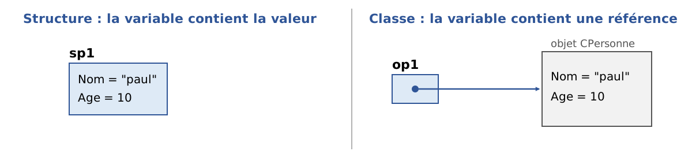
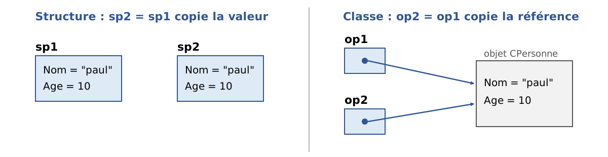

4. Classes, structures, interfaces
4.1. L'objet par l'exemple
4.1.1. Généralités
Nous abordons maintenant, par l'exemple, la programmation objet. Un objet est une entité qui contient des données qui définissent son état (on les appelle des champs, attributs, …) et des fonctions (on les appelle des méthodes). Un objet est créé selon un modèle qu'on appelle une classe :
À partir de la classe [C1] précédente, on peut créer de nombreux objets [O1], [O2], … Tous auront les champs [p1], [p2], … et les méthodes [M3], [M4], … Mais ils auront des valeurs différentes pour leurs champs [pi], ayant ainsi chacun un état qui leur est propre. Si [o1] est un objet de type [C1], [o1.p1] désigne le champ [p1] de [o1] et [o1.M3] la méthode [M3] de [o1].
Considérons un premier modèle d'objet : la classe [Personne].
4.1.2. Création du projet C#
Dans les exemples du chapitre précédent, un programme tenait dans un unique fichier source. À partir de maintenant, un programme pourra être formé de plusieurs fichiers source : une classe par fichier, plus le programme principal. Ces fichiers sont rassemblés dans un projet. Le cours de 2008 créait les projets avec les assistants de Visual Studio 2008 ; nous utilisons ici l'outil en ligne de commande [dotnet], qui fonctionne de la même façon sous Windows, Linux et macOS. Le chapitre 2 a montré comment ouvrir le même projet dans VS Code ou Visual Studio.
Dans un terminal, plaçons-nous dans le dossier [04-classes] et créons un projet console nommé [Personnes] :
La commande crée un dossier [Personnes] contenant deux fichiers. Le fichier [Personnes.csproj] décrit le projet :
- ligne 4 : le projet produit un exécutable ;
- ligne 5 : le programme cible .NET 10 ;
- ligne 6 : un ensemble d'espaces de noms usuels ([System], [System.IO], [System.Collections.Generic], [System.Linq], …) est importé implicitement dans tous les fichiers source du projet. C'est pourquoi nous pouvons écrire [Console.WriteLine] sans clause [using System;] ;
- ligne 7 : les types référence nullables sont activés. Le compilateur signale par un avertissement toute variable de type référence (une chaîne, un objet) qui risque de valoir [null] sans que le programme l'ait prévu. Nous y reviendrons au paragraphe consacré à ces types ; pour l'instant, retenons que nos programmes doivent compiler sans aucun avertissement.
Le second fichier, [Program.cs], contient le programme principal. Tous les fichiers [*.cs] du dossier du projet (et de ses sous-dossiers) font partie du projet : pour ajouter une classe [Personne], il suffit de créer le fichier [Personne.cs] dans le dossier [Personnes]. On exécute le projet en tapant [dotnet run] dans son dossier : la commande compile le projet, s'il a changé, puis l'exécute.
Tous les projets de ce chapitre sont regroupés dans une solution, un fichier qui référence un ensemble de projets et que VS Code ou Visual Studio savent ouvrir d'un coup. Le format [.slnx] (XML), reconnu par la commande [dotnet] depuis .NET 9 et format par défaut depuis .NET 10, remplace l'ancien format [.sln] :
La commande [dotnet build 04-classes.slnx] compile alors tous les projets de la solution.
4.1.3. Définition de la classe Personne
La définition de la classe [Personne] dans le fichier source [Personne.cs] sera la suivante :
- ligne 1 : la classe appartient à l'espace de noms [Personnes] (le nom du projet). Cette forme [namespace Personnes;], dite « de portée fichier », place dans l'espace de noms tous les types du fichier. Les espaces de noms sont présentés à la fin du chapitre ;
- lignes 6-8 : les trois champs de la classe. Les deux chaînes sont initialisées avec la chaîne vide : sans cela, elles vaudraient [null] à la création de l'objet et le compilateur, qui a les types nullables activés, émettrait un avertissement ;
- lignes 11-15 : une méthode qui fixe l'état de l'objet ;
- lignes 19-21 : une méthode qui affiche l'état de l'objet.
Nous avons ici la définition d'une classe, donc d'un type de données. Lorsqu'on va créer des variables de ce type, on les appellera des objets ou des instances de classe. Une classe est donc un moule à partir duquel sont construits des objets.
Les membres d'une classe peuvent être des données (champs), des méthodes (fonctions), des propriétés. Les propriétés sont des méthodes particulières servant à connaître ou fixer la valeur de champs de l'objet. Ces membres peuvent être accompagnés de l'un des mots clés suivants :
Mot clé | Accès |
[private] | un membre privé n'est accessible que par les seules méthodes internes de la classe. C'est l'accès par défaut |
[public] | un membre public est accessible par toute méthode, définie ou non au sein de la classe |
[protected] | un membre protégé n'est accessible que par les seules méthodes internes de la classe ou d'une classe dérivée (voir plus loin le concept d'héritage) |
[internal] | un membre interne est accessible par toute méthode du même assemblage (le même projet) |
En général, les données d'une classe sont déclarées privées alors que ses méthodes et propriétés sont déclarées publiques. Cela signifie que l'utilisateur d'un objet (le programmeur) :
- n'aura pas accès directement aux données privées de l'objet ;
- pourra faire appel aux méthodes publiques de l'objet et notamment à celles qui donneront accès à ses données privées.
La syntaxe de déclaration d'une classe [C] est la suivante :
L'ordre de déclaration des membres [private], [protected] et [public] est quelconque.
4.1.4. La méthode Initialise
Quel est le rôle de la méthode [Initialise] ? Parce que [nom], [prenom] et [age] sont des données privées de la classe [Personne], les instructions :
sont illégales. Il nous faut initialiser un objet de type [Personne] via une méthode publique. C'est le rôle de la méthode [Initialise]. On écrira :
L'écriture [p1.Initialise] est légale car [Initialise] est d'accès public.
4.1.5. L'opérateur new
La séquence d'instructions précédente est pourtant incorrecte. L'instruction
déclare [p1] comme une référence à un objet de type [Personne]. Cet objet n'existe pas encore et donc [p1] n'est pas initialisé. Lorsqu'on écrit ensuite [p1.Initialise("Jean", "Dupont", 30)], on fait appel à la méthode [Initialise] de l'objet référencé par [p1]. Or cet objet n'existe pas et le compilateur signale l'erreur : la variable locale [p1] n'a pas reçu de valeur. Si on écrit :
on indique explicitement avec le mot clé [null] que la variable [p1] ne référence encore aucun objet (le point d'interrogation de [Personne?] indique que la variable a le droit de valoir [null]). Le compilateur se contente alors d'un avertissement (déréférencement d'une référence nulle) et, à l'exécution, l'appel de la méthode provoque une exception [NullReferenceException]. Pour que [p1] référence un objet, il faut écrire :
Cela a pour effet de créer un objet de type [Personne] non encore initialisé : ses champs ont leur valeur initiale, ici la chaîne vide pour [nom] et [prenom] et 0 pour [age] (un champ numérique sans valeur initiale explicite vaut 0, un champ de type référence [null]). Maintenant que [p1] référence un objet, l'instruction d'initialisation de cet objet [p1.Initialise("Jean", "Dupont", 30)] est valide.
4.1.6. Le mot clé this
Regardons le code de la méthode [Initialise] :
L'instruction [this.prenom = p] signifie que le champ [prenom] de l'objet courant ([this]) reçoit la valeur [p]. Le mot clé [this] désigne l'objet courant : celui sur lequel la méthode est exécutée. Comment le connaît-on ? Regardons comment se fait l'initialisation de l'objet référencé par [p1] dans le programme appelant :
C'est la méthode [Initialise] de l'objet [p1] qui est appelée. Lorsque, dans cette méthode, on référence l'objet [this], on référence en fait l'objet [p1]. La méthode [Initialise] aurait aussi pu être écrite comme suit :
Lorsqu'une méthode d'un objet référence un champ [A] de cet objet, l'écriture [this.A] est implicite. On doit l'utiliser explicitement lorsqu'il y a conflit d'identificateurs. C'est le cas de l'instruction [this.age = age;] où [age] désigne à la fois un champ de l'objet courant et le paramètre [age] reçu par la méthode. Il faut alors lever l'ambiguïté en désignant le champ [age] par [this.age].
4.1.7. Un programme de test
Voici un court programme de test. Celui-ci est écrit dans le fichier source [Program.cs] du projet :
- ligne 1 : le programme principal est écrit avec des instructions de haut niveau, qui n'appartiennent à aucun espace de noms. Pour désigner la classe [Personne] par son seul nom, il faut importer son espace de noms [Personnes] avec la clause [using] ;
- ligne 4 : création d'un objet [Personne] référencé par [p1] ;
- ligne 5 : initialisation de l'objet ;
- ligne 6 : affichage de son état.
Résultats :
4.1.8. Les applications fichier unique
Pour un exemple court, un projet est inutilement lourd. Depuis .NET 10, un fichier source isolé peut être exécuté directement par [dotnet run fichier.cs], sans fichier [.csproj] : c'est une application fichier unique, que nous avons utilisée au chapitre précédent. Les options du projet (types nullables activés, [using] implicites) sont les mêmes que celles d'un projet console. Nous utiliserons cette forme chaque fois que l'exemple ne comporte qu'une classe ou deux.
Le fichier contient alors les instructions de haut niveau puis les déclarations des classes : le compilateur impose cet ordre, les instructions de haut niveau devant précéder toute déclaration de type (classe, structure, interface…) du fichier. Les classes ainsi déclarées n'appartiennent à aucun espace de noms, ce qui est sans importance dans un programme d'un seul fichier.
4.1.9. Une autre méthode Initialise : la surcharge
Considérons toujours la classe [Personne] et ajoutons-lui une seconde méthode [Initialise]. Le programme [classes-01.cs] est le suivant :
- lignes 2-7 : les instructions de haut niveau, c'est-à-dire le programme principal ;
- ligne 10 : la classe [Personne] est déclarée après les instructions de haut niveau ;
- lignes 18-22 : la méthode [Initialise] du paragraphe précédent ;
- lignes 26-30 : une seconde méthode [Initialise].
On a maintenant deux méthodes portant le nom [Initialise] : c'est légal tant qu'elles admettent des paramètres différents (en nombre ou en type). On dit que la méthode [Initialise] est surchargée. Le compilateur choisit la méthode à appeler d'après les paramètres effectifs : [p1.Initialise("Jean", "Dupont", 30)] (ligne 3) appelle la première, [p2.Initialise(p1)] (ligne 6) appelle la seconde.
Le paramètre de la seconde méthode est une référence [p] à une personne. Les champs de la personne [p] sont alors affectés à l'objet courant ([this]). On remarquera que la méthode [Initialise] a un accès direct aux champs de l'objet [p] bien que ceux-ci soient privés (lignes 28-30). C'est toujours vrai : une méthode d'une classe [C] a accès aux membres privés de tous les objets de la même classe [C].
Résultats :
4.1.10. Constructeurs de la classe Personne
Un constructeur est une méthode qui porte le nom de la classe et qui est appelée lors de la création de l'objet. On s'en sert généralement pour l'initialiser. C'est une méthode qui peut accepter des paramètres mais qui ne rend aucun résultat. Sa déclaration n'est précédée d'aucun type (pas même [void]).
Si une classe [C] a un constructeur acceptant n paramètres, la déclaration et l'initialisation d'un objet de cette classe pourra se faire sous la forme :
ou
Lorsqu'une classe [C] a un ou plusieurs constructeurs, l'un de ces constructeurs doit obligatoirement être utilisé pour créer un objet de cette classe. Si une classe [C] n'a aucun constructeur, elle en a un par défaut qui est le constructeur sans paramètres [public C()]. Les champs de l'objet gardent alors leurs valeurs initiales. C'est ce qui s'est passé dans les programmes précédents, où on avait écrit [new Personne()].
Le programme [classes-02.cs] donne trois constructeurs à la classe [Personne] :
- lignes 17-21 : le constructeur « principal » initialise les trois champs. Ses paramètres portant les mêmes noms que les champs, on distingue ces derniers avec [this] ;
- ligne 25 : le constructeur de copie. L'écriture [: this(p.prenom, p.nom, p.age)] signifie qu'avant d'exécuter le corps (vide) du constructeur, on appelle le constructeur de la même classe qui accepte trois paramètres [string], [string], [int]. On dit que les constructeurs sont chaînés. Le code d'initialisation n'est ainsi écrit qu'une fois ;
- ligne 30 : le constructeur sans paramètres, chaîné lui aussi au constructeur principal. Comme la classe a déclaré des constructeurs, elle n'a plus de constructeur par défaut : si on veut pouvoir écrire [new Personne()], il faut le déclarer ;
- lignes 11-14 : les deux chaînes ne sont plus initialisées à leur déclaration. Ce n'est plus utile : tous les constructeurs, directement ou par chaînage, leur donnent une valeur, et le compilateur le vérifie.
Le cours de 2008 faisait appeler la méthode [Initialise] par les constructeurs. Le chaînage avec [this(...)] est préférable : avec les types nullables activés, le compilateur ne regarde pas l'intérieur des méthodes appelées par un constructeur et signalerait que les champs [prenom] et [nom] peuvent valoir [null] à la fin de la construction.
Résultats :
4.1.11. Les références d'objets
Nous utilisons la classe [Personne] du programme précédent, sans son constructeur sans paramètres mais avec la méthode [Initialise(string, string, int)] du début du chapitre. Le programme de test devient le suivant [classes-03.cs] (nous ne reproduisons pas la classe) :
Résultats :
Lorsqu'on déclare la variable [p1] par [Personne p1 = new Personne("Jean", "Dupont", 30);] (ligne 3), [p1] référence l'objet [Personne("Jean", "Dupont", 30)] mais n'est pas l'objet lui-même. En C, on dirait que c'est un pointeur, c'est-à-dire l'adresse de l'objet créé. Si on écrit ensuite [p1 = null;], ce n'est pas l'objet [Personne("Jean", "Dupont", 30)] qui est modifié, c'est la référence [p1] qui change de valeur. L'objet sera « perdu » s'il n'est référencé par aucune autre variable : la mémoire qu'il occupe sera récupérée plus tard par le ramasse-miettes (garbage collector) de .NET.
Lorsqu'on écrit [Personne p2 = p1;] (ligne 6), on initialise la référence [p2] : elle « pointe » sur le même objet (elle désigne le même objet) que la référence [p1]. Ainsi si on modifie l'objet « pointé » (ou référencé) par [p1], on modifie aussi celui référencé par [p2] (lignes 5-6 des résultats).
Lorsqu'on écrit [Personne p3 = new Personne(p1);] (ligne 9), il y a création d'un nouvel objet [Personne]. Ce nouvel objet sera référencé par [p3]. Si on modifie l'objet référencé par [p1], on ne modifie en rien celui référencé par [p3] (ligne 7).
Enfin, ligne 19, l'opérateur [==] appliqué à deux références d'objets indique si elles désignent le même objet : [p1] et [p2] désignent le même objet, [p1] et [p3] deux objets différents, bien que de même contenu (ligne 8).
4.1.12. Passage de paramètres de type référence d'objet
Dans le chapitre précédent, nous avons étudié les modes de passage des paramètres d'une fonction lorsque ceux-ci étaient de type simple ([int], [double], …). Voyons ce qui se passe lorsque le paramètre est une référence d'objet. Nous utilisons pour cela la classe [StringBuilder] de .NET. Un objet [string] ne peut pas être modifié : une opération comme [s.ToUpper()] rend un nouvel objet [string]. Un objet [StringBuilder], au contraire, est une chaîne modifiable : sa méthode [Append] ajoute des caractères à la chaîne sans créer de nouvel objet.
Le programme [classes-04.cs] est le suivant :
- ligne 1 : la classe [StringBuilder] appartient à l'espace de noms [System.Text], qui ne fait pas partie des espaces de noms importés implicitement ;
- ligne 4 : trois références [sb0, sb1, sb2] à des objets de type [StringBuilder] ;
- ligne 6 : elles sont passées à la fonction [ChangeStringBuilder] avec des modes différents : [sb0] et [sb1] avec le mode par défaut, [sb2] avec le mot clé [ref], et une quatrième référence [sb3], déclarée dans l'appel lui-même ([out StringBuilder sb3]), avec le mot clé [out] ;
- lignes 10-17 : une fonction locale qui a les paramètres formels [sbf0, sbf1, sbf2, sbf3]. Les relations entre paramètres formels [sbfi] et effectifs [sbi] sont les suivantes :
- [sbf0] et [sb0] sont, au démarrage de la fonction, deux références distinctes qui pointent sur le même objet (passage par valeur des références) ;
- idem pour [sbf1] et [sb1] ;
- [sbf2] et [sb2] sont une seule et même référence (mot clé [ref]) ;
- [sbf3] et [sb3] sont, eux aussi, une même référence (mot clé [out]), que la fonction doit initialiser.
Résultats :
Explications :
- [sb0] et [sbf0] sont deux références distinctes sur le même objet. Celui-ci a été modifié via [sbf0] (ligne 13). Cette modification est visible via [sb0] (ligne 5) ;
- [sb1] et [sbf1] sont deux références distinctes sur le même objet. [sbf1] reçoit une nouvelle valeur dans la fonction et pointe désormais sur un nouvel objet (ligne 14). Cela ne change en rien la valeur de [sb1] qui continue à pointer sur l'objet d'origine, non modifié ;
- [sb2] et [sbf2] sont une même référence. [sbf2] pointe désormais sur un nouvel objet (ligne 15). Comme [sbf2] et [sb2] sont une seule et même entité, [sb2] pointe aussi sur ce nouvel objet ;
- avant l'appel de la fonction, [sb3] n'avait pas de valeur. Après l'appel, [sb3] désigne l'objet créé par la fonction (ligne 16).
4.1.13. Les objets temporaires
Dans une expression, on peut faire appel explicitement au constructeur d'un objet : celui-ci est construit, mais nous n'avons pas de variable pour y accéder ultérieurement (pour le modifier par exemple). Cet objet temporaire est construit pour les besoins de l'évaluation de l'expression puis abandonné. L'espace mémoire qu'il occupait sera automatiquement récupéré ultérieurement par le ramasse-miettes, dont le rôle est de récupérer l'espace mémoire occupé par des objets qui ne sont plus référencés par les données du programme.
Considérons le programme [classes-05.cs] suivant, où les constructeurs de la classe [Personne] affichent un message :
- ligne 2 : l'objet [Personne("Jean", "Dupont", 30)] est construit puis passé au constructeur de copie qui construit un second objet, dont on appelle la méthode [Identifie]. Aucun des deux objets n'est référencé par une variable.
Résultats :
Les résultats montrent la construction successive des deux objets temporaires.
4.1.14. Méthodes de lecture et d'écriture des champs privés
Nous ajoutons à la classe [Personne] les méthodes nécessaires pour lire ou modifier l'état des champs des objets [classes-06.cs] :
- lignes 22-35 : les méthodes de lecture, appelées accesseurs (getters) ;
- lignes 38-51 : les méthodes d'écriture, appelées modifieurs (setters).
Résultats :
Cette façon de faire est celle du langage Java. C# offre un mécanisme plus élégant : les propriétés.
4.1.15. Les propriétés
Il existe une autre façon d'avoir accès aux champs d'une classe, c'est de créer des propriétés. Celles-ci nous permettent de manipuler des champs privés comme s'ils étaient publics.
Une propriété permet de lire ([get]) ou de fixer ([set]) la valeur d'un champ. Une propriété est déclarée comme suit :
où [Type] est en général le type du champ géré par la propriété. Elle peut avoir deux méthodes appelées [get] et [set]. La méthode [get] est habituellement chargée de rendre la valeur du champ qu'elle gère (elle pourrait rendre autre chose, rien ne l'empêche). La méthode [set] reçoit un paramètre appelé [value] qu'elle affecte normalement au champ qu'elle gère. Elle peut en profiter pour vérifier la validité de la valeur reçue et éventuellement lancer une exception si la valeur se révèle invalide.
Considérons le programme [classes-07.cs] où les accesseurs et modifieurs précédents ont été remplacés par des propriétés en lecture et écriture :
Les méthodes [set] des trois propriétés vérifient la valeur reçue (lignes 52-57, 66-71, 80-85).
- lignes 53-55 : la méthode [string.IsNullOrWhiteSpace] rend [true] si la chaîne est [null], vide ou formée uniquement d'espaces. L'exception lancée est de type [ArgumentException], l'exception prévue par .NET pour signaler un paramètre invalide. Le cours de 2008 lançait une exception du type général [Exception], ce qui oblige l'appelant à intercepter toutes les exceptions ;
- lignes 34-39 : le constructeur initialise l'objet via les propriétés et non via les champs. Il profite ainsi des vérifications faites par les méthodes [set], qui ne sont écrites qu'à un endroit.
Comment ces méthodes [get] et [set] sont-elles appelées ? Dans l'instruction de la ligne 3, on cherche à avoir les valeurs des propriétés [Prenom], [Nom] et [Age] de la personne [p]. C'est la méthode [get] de ces propriétés qui est alors appelée et qui rend la valeur du champ qu'elles gèrent. Dans l'instruction [p.Age = 56;] (ligne 4), on veut fixer la valeur de la propriété [Age]. C'est alors la méthode [set] de cette propriété qui est appelée. Elle reçoit 56 dans son paramètre [value].
Une propriété [P] d'une classe [C] qui ne définirait que la méthode [get] est dite en lecture seule. Si [c] est un objet de classe [C], l'opération [c.P = valeur] sera alors refusée par le compilateur.
Résultats :
La ligne 4 des résultats montre que l'affectation [p.Age = -4] (ligne 8) a été refusée par la méthode [set] de la propriété [Age].
4.1.16. Les initialiseurs d'objet
Les propriétés peuvent être utilisées conjointement avec un constructeur selon la syntaxe suivante :
Cette syntaxe, appelée initialiseur d'objet, est équivalente au code suivant :
L'ordre des propriétés n'importe pas. Dans le programme [classes-07.cs] précédent, la classe [Personne] a un constructeur sans paramètres qui n'initialise rien. Revenons à la fin du programme principal :
Ligne 15, le constructeur sans paramètres est utilisé pour créer une personne initialisée ensuite par ses propriétés. On aurait pu écrire [new Personne() { Age = 7, ... }], mais les parenthèses du constructeur sans paramètres ne sont pas obligatoires dans cette syntaxe. Les méthodes [set] sont bien appelées : ligne 19, le nom formé d'un espace est refusé (ligne 6 des résultats).
4.1.17. Les propriétés automatiques
Dans beaucoup de cas, les méthodes [get] et [set] d'une propriété se contentent de lire et écrire un champ privé sans autre traitement. On peut alors utiliser une propriété automatique déclarée comme suit :
Le champ privé associé à la propriété n'est pas déclaré : il est automatiquement généré par le compilateur, et on n'y accède que via sa propriété. Ainsi, au lieu d'écrire le champ [prenom] et la propriété [Prenom] du programme [classes-07.cs], on pourra écrire :
sans déclarer le champ privé [prenom]. L'expression [= ""] qui suit la propriété est la valeur initiale du champ caché. La différence entre les deux propriétés est que la première vérifie la validité du prénom dans le [set], alors que la seconde ne fait aucune vérification.
Utiliser la propriété automatique [Prenom] revient-il à déclarer un champ public [public string Prenom;] ? Pour l'utilisateur de la classe, l'écriture est la même. Mais déclarer public un champ d'une classe est déconseillé : cela rompt avec le concept d'encapsulation de l'état d'un objet, état qui doit être privé et exposé par des méthodes publiques. Avec une propriété automatique, on pourra plus tard ajouter des vérifications dans le [set] sans changer le code des utilisateurs de la classe.
Les propriétés automatiques ont plusieurs variantes, présentées par le programme [classes-08.cs] :
- ligne 29 : une propriété automatique en lecture et écriture, avec une valeur initiale ;
- ligne 31 : une propriété automatique en lecture seule : elle n'a pas de [set] et ne peut être fixée que par un constructeur (ligne 24) ;
- ligne 33 : la méthode [set] peut avoir un accès plus restreint que la propriété : ici, la propriété [Age] est lisible par tous mais modifiable seulement par les méthodes de la classe, comme [Vieillir] (ligne 40) ;
- ligne 35 : une propriété [init] (C# 9) : elle peut être fixée par un constructeur ou par un initialiseur d'objet (ligne 2), mais plus ensuite. C'est le moyen de créer des objets immuables tout en profitant de la syntaxe des initialiseurs d'objet ;
- ligne 37 : une propriété en lecture seule dont la valeur est calculée. L'écriture [=> expression] est une forme abrégée de [get { return expression; }]. Elle s'applique aussi aux méthodes (ligne 40) : on parle de membres à corps d'expression ;
- ligne 46 : une propriété obligatoire (C# 11) : le mot clé [required] oblige le code qui crée un objet [Contact] à initialiser la propriété [Email] dans un initialiseur d'objet (ligne 15). Le compilateur refuse la ligne 17 si on la décommente ;
- lignes 10-12 : trois instructions que le compilateur refuse, pour les raisons données en commentaires.
Rappelons qu'avec le mot clé [var] (ligne 2), le type de la variable est déduit de l'expression qui l'initialise, ici [Personne].
Résultats :
Enfin, une propriété automatique peut être déclarée virtuelle ([public virtual string Prop { get; set; }]) et être redéfinie dans une classe dérivée, par exemple pour ajouter une vérification dans le [set]. Les mots clés [virtual] et [override] sont présentés avec l'héritage.
4.1.18. Le mot clé field (C# 14)
Entre la propriété automatique, qui ne vérifie rien, et la propriété complète du programme [classes-07.cs], qui oblige à déclarer un champ, C# 14 propose une forme intermédiaire : dans les accesseurs d'une propriété, le mot clé [field] désigne le champ créé par le compilateur. On peut ainsi écrire une vérification sans déclarer de champ [classes-09.cs] :
- lignes 26-31 : la propriété [Prenom]. Sa méthode [get] est automatique ([get;]) : elle rend la valeur du champ caché. Sa méthode [set] vérifie la valeur reçue et l'affecte, débarrassée de ses espaces de début et de fin, au champ caché désigné par [field]. L'expression [condition ? throw ... : valeur] utilise une expression throw : si la condition est vraie, l'exception est lancée ; sinon l'expression vaut [value.Trim()] ;
- ligne 32 : la valeur initiale du champ caché ;
- lignes 42-51 : un [set] écrit avec un bloc d'instructions.
Résultats :
Le prénom « jean », fourni entouré d'espaces (ligne 2), a été mémorisé sans eux (ligne 2).
4.1.19. Les méthodes et attributs de classe
Supposons qu'on veuille compter le nombre d'objets [Personne] créés dans une application. On peut soi-même gérer un compteur mais on risque d'oublier les objets temporaires qui sont créés ici ou là. Il semble plus sûr d'inclure dans les constructeurs de la classe [Personne] une instruction incrémentant un compteur. Ce compteur ne peut pas être un champ ordinaire, puisque chaque objet a ses propres champs : c'est un champ de la classe elle-même et non celui d'une instance particulière de cette classe. On le déclare avec le mot clé [static] :
Pour le désigner, on écrit [Personne.nbPersonnes] pour montrer que c'est un champ de la classe [Personne] elle-même. Ici, nous avons créé un champ privé auquel on n'aura pas accès directement en dehors de la classe. On crée donc une propriété publique pour donner accès au champ de classe [nbPersonnes]. Pour rendre la valeur de [nbPersonnes], la méthode [get] de cette propriété n'a pas besoin d'un objet [Personne] particulier : aussi a-t-on besoin d'une propriété déclarée elle aussi [static], qui de l'extérieur sera appelée avec la syntaxe [Personne.NbPersonnes]. Voici un exemple [classes-10.cs] :
- ligne 14 : le champ de classe. Comme tout champ numérique, il est initialisé à 0 ;
- lignes 17-19 : la propriété de classe en lecture seule. Elle aurait pu s'écrire plus simplement [public static long NbPersonnes { get; private set; }] ;
- lignes 23-25 : une méthode de classe. Elle s'appelle avec le nom de la classe : [Personne.Inconnue()] (ligne 7). Une méthode de classe n'a pas d'objet courant : le mot clé [this] n'y a pas de sens et elle ne peut utiliser directement que les membres [static] de la classe ;
- ligne 39 : le constructeur principal incrémente le compteur. Le constructeur de copie, chaîné au constructeur principal, l'incrémente donc aussi.
Résultats :
Le programme a bien compté l'objet temporaire créé ligne 4. Nous utilisons depuis le début des membres de classe : [Console.WriteLine], [int.Parse], [Math.Sqrt] sont des méthodes [static]. [Console] et [Math] sont même des classes statiques ([static class]) : elles ne contiennent que des membres [static] et on ne peut pas en créer d'instances.
4.1.20. Un tableau de personnes
Un objet est une donnée comme une autre et à ce titre plusieurs objets peuvent être rassemblés dans un tableau [classes-11.cs] :
- ligne 2 : crée un tableau de 3 éléments de type [Personne]. Ces 3 éléments sont initialisés ici avec la valeur [null], c'est-à-dire qu'ils ne référencent aucun objet. Par abus de langage, on parle de tableau d'objets alors que ce n'est qu'un tableau de références d'objets. La création du tableau, qui est un objet lui-même (présence de [new]), ne crée aucun objet du type de ses éléments : il faut le faire ensuite. On notera que le compilateur ne signale pas que les éléments d'un tableau de type [Personne[]] valent [null] juste après sa création : c'est une limite de l'analyse des types nullables ;
- lignes 3-5 : création des 3 objets de type [Personne] ;
- lignes 7-9 : affichage du contenu du tableau [amis].
La classe [Personne], déclarée à la suite, est celle du programme [classes-03.cs] réduite à son constructeur à trois paramètres et à sa méthode [Identifie]. Résultats :
4.1.21. Les expressions new() à type cible
Lorsque le type de l'objet à créer est connu par le contexte, C# 9 permet d'omettre le nom de la classe après [new]. Le programme [classes-12.cs] le montre :
- ligne 3 : le type de l'objet créé par [new(...)] est celui de la variable qui le reçoit, [Personne]. Cette écriture est l'inverse de [var] : avec [var], c'est le type de la variable qui est déduit de l'expression ; avec [new()], c'est le type de l'objet qui est déduit de la variable ;
- ligne 4 : [new()] avec un initialiseur d'objet ;
- lignes 6-11 : un tableau créé et rempli par une expression de collection (C# 12) : les éléments sont placés entre crochets et séparés par des virgules. Le type des éléments, [Personne], est connu : [new(...)] suffit pour les créer ;
- ligne 18 : le type de l'objet créé est celui du paramètre de la fonction [Affiche].
Résultats :
4.2. L'héritage par l'exemple
4.2.1. Généralités
Nous abordons ici la notion d'héritage. Le but de l'héritage est de « personnaliser » une classe existante pour qu'elle satisfasse à nos besoins. Supposons qu'on veuille créer une classe [Enseignant] : un enseignant est une personne particulière. Il a des attributs qu'une autre personne n'aura pas : la matière qu'il enseigne par exemple. Mais il a aussi les attributs de toute personne : prénom, nom et âge. Un enseignant fait donc pleinement partie de la classe [Personne] mais a des attributs supplémentaires. Plutôt que d'écrire une classe [Enseignant] à partir de rien, on préfère reprendre l'acquis de la classe [Personne] qu'on adapte au caractère particulier des enseignants. C'est le concept d'héritage qui nous permet cela.
Pour exprimer que la classe [Enseignant] hérite des propriétés de la classe [Personne], on écrit :
[Personne] est appelée la classe parent (ou mère, ou de base) et [Enseignant] la classe dérivée (ou fille). Un objet [Enseignant] a toutes les qualités d'un objet [Personne] : il a les mêmes champs et les mêmes méthodes. Ces champs et méthodes de la classe parent ne sont pas répétés dans la définition de la classe fille : on se contente d'indiquer les champs et méthodes ajoutés par la classe fille. Une classe C# ne peut dériver que d'une seule classe parent.
Les exemples de ce paragraphe sont deux projets console, [Heritage1] et [Heritage2], de la solution [04-classes.slnx]. Dans le projet [Heritage1], la classe [Personne] est définie comme suit [Personne.cs] :
- ligne 6 : le compteur de personnes du paragraphe précédent, écrit cette fois sous la forme d'une propriété de classe automatique dont l'écriture est réservée à la classe ;
- lignes 9-15 : le constructeur initialise l'objet via ses propriétés et affiche un message de suivi ;
- lignes 19-34 : trois propriétés qui vérifient leur valeur grâce au mot clé [field]. Les vérifications du prénom et du nom, identiques, sont factorisées dans la méthode privée de classe [Verifier] (lignes 41-47) ;
- ligne 38 : la méthode [Identifie] des exemples précédents a été remplacée par la propriété en lecture seule [Identite], qui rend l'identité de la personne au lieu de l'afficher.
Nous créons une classe [Enseignant] héritant de la classe [Personne] [Enseignant.cs] :
La classe [Enseignant] ajoute aux méthodes et propriétés de la classe [Personne] :
- ligne 3 : la classe [Enseignant] dérive de la classe [Personne] ;
- ligne 16 : une propriété [Section] qui est le numéro de section auquel appartient l'enseignant dans le corps des enseignants (une section par discipline en gros) ;
- lignes 6-12 : un constructeur permettant d'initialiser toutes les propriétés d'un enseignant ;
- ligne 19 : une nouvelle propriété [Identite], étudiée un peu plus loin.
4.2.2. Construction d'un objet Enseignant
Une classe fille n'hérite pas des constructeurs de sa classe parent. Elle doit définir ses propres constructeurs. Le constructeur de la classe [Enseignant] est le suivant :
La déclaration des lignes 6-7 déclare que le constructeur reçoit quatre paramètres [prenom], [nom], [age], [section] et en passe trois ([prenom], [nom], [age]) à sa classe de base, ici la classe [Personne]. On sait que cette classe a un constructeur [Personne(string, string, int)] qui va permettre de construire une personne avec les paramètres passés. Une fois la construction de la partie [Personne] terminée, la construction de l'objet [Enseignant] se poursuit par l'exécution du corps du constructeur (ligne 10).
On notera qu'à gauche du signe =, on utilise la propriété [Section]. Si cette propriété faisait des contrôles de validité, le constructeur en profiterait. Cela évite de placer ceux-ci à deux endroits différents : le constructeur et la propriété.
En résumé, le constructeur d'une classe dérivée :
- passe à sa classe de base les paramètres dont celle-ci a besoin pour se construire ;
- utilise les autres paramètres pour initialiser les membres qui lui sont propres.
On aurait pu préférer écrire :
C'est impossible, pour deux raisons. D'abord, la classe [Personne] n'a pas de constructeur sans paramètres : en l'absence de [: base(...)], le compilateur cherche à appeler ce constructeur et signale une erreur. Ensuite, même si les champs privés [prenom], [nom], [age] existaient (ici ce sont les champs cachés des propriétés), seuls les objets de la classe [Personne] y ont un accès direct. Tous les autres objets, y compris des objets de classes dérivées comme ici, doivent passer par des membres publics (ou protégés) pour y avoir accès. Cela aurait été différent si la classe [Personne] avait déclaré ces champs protégés ([protected]) : elle aurait alors autorisé les classes dérivées à y avoir un accès direct. Utiliser le constructeur de la classe parent est donc la bonne solution et c'est la méthode habituelle : lors de la construction d'un objet fils, on appelle d'abord le constructeur de l'objet parent puis on complète les initialisations propres cette fois à l'objet fils ([Section] dans notre exemple).
Si la classe [Enseignant] ne définissait pas de propriété [Identite], l'expression [e.Identite], où [e] est un enseignant, désignerait la propriété [Identite] héritée de la classe [Personne] : elle est publique et devient par héritage une propriété publique de la classe [Enseignant]. On obtiendrait alors l'identité de la partie [Personne] de l'enseignant, sans sa section.
4.2.3. Masquage d'une propriété ou d'une méthode : le mot clé new
Pour obtenir l'identité complète d'un enseignant, la classe [Enseignant] définit sa propre propriété [Identite] :
La propriété [Identite] de la classe [Enseignant] s'appuie sur la propriété [Identite] de sa classe mère, désignée par [base.Identite], pour obtenir la partie « Personne » puis complète avec la section, qui est propre à la classe [Enseignant].
Soit un objet enseignant [E]. Cet objet contient en son sein un objet [Personne] :

La propriété [Identite] est définie à la fois dans la classe [Enseignant] et dans sa classe mère [Personne]. Dans la classe fille [Enseignant], la propriété [Identite] est précédée du mot clé [new] pour indiquer qu'on définit volontairement une nouvelle propriété [Identite] pour la classe [Enseignant] (sans [new], le compilateur émet un avertissement). La classe [Enseignant] dispose maintenant de deux propriétés [Identite] :
- celle héritée de la classe parent [Personne] ;
- la sienne propre.
Si [E] est un objet [Enseignant], [E.Identite] désigne la propriété [Identite] de la classe [Enseignant]. On dit que la propriété [Identite] de la classe fille masque (cache) la propriété [Identite] de la classe mère. De façon générale, si [O] est un objet et [M] une méthode, pour exécuter la méthode [O.M], le compilateur cherche une méthode [M] dans l'ordre suivant :
- dans la classe de l'objet [O] ;
- dans sa classe mère s'il en a une ;
- dans la classe mère de sa classe mère si elle existe ;
- etc.
L'héritage permet donc de redéfinir dans la classe fille des méthodes et propriétés de même nom que dans la classe mère. C'est ce qui permet d'adapter la classe fille à ses propres besoins.
Le programme de test [Program.cs] du projet [Heritage1] est le suivant :
- ligne 4 : création d'un enseignant ;
- ligne 6 : affichage de son identité, celle de la classe [Enseignant] ;
- ligne 8 : l'opérateur de conversion [(Personne)] fait voir l'objet [e] comme une [Personne] : c'est alors la propriété [Identite] de la classe [Personne] qui est utilisée ;
- lignes 12-13 : appel de la fonction [Affiche] (lignes 20-22) avec un enseignant puis une personne. Nous y revenons au paragraphe suivant ;
- lignes 15-16 : appel de la méthode [ToString] des deux objets. Nous y revenons également.
Résultats :
On voit que :
- un objet [Personne] (ligne 2) a été construit avant l'objet [Enseignant] (ligne 3) ;
- [e.Identite] a donné l'identité complète de l'enseignant (ligne 4) et [((Personne)e).Identite] celle de sa partie [Personne] (ligne 5).
4.2.4. Le polymorphisme
Considérons une lignée de classes : C0 ← C1 ← C2 ← … ← Cn, où Ci ← Cj indique que la classe Cj est dérivée de la classe Ci. Cela entraîne que la classe Cj a toutes les caractéristiques de la classe Ci plus d'autres. Soient des objets Oi de type Ci. Il est légal d'écrire [Oi = Oj] avec j > i. En effet, par héritage, la classe Cj a toutes les caractéristiques de la classe Ci plus d'autres. Donc un objet Oj de type Cj contient en lui un objet de type Ci. L'opération [Oi = Oj] fait que Oi est une référence à l'objet de type Ci contenu dans l'objet Oj.
Le fait qu'une variable Oi de classe Ci puisse en fait référencer non seulement un objet de la classe Ci mais tout objet dérivé de la classe Ci est appelé polymorphisme : la faculté pour une variable de référencer différents types d'objets.
Prenons un exemple et considérons la fonction [Affiche] du programme précédent :
On peut aussi bien lui passer une [Personne] qu'un [Enseignant] : dans ce dernier cas, le paramètre formel [p] de type [Personne] reçoit une valeur de type [Enseignant]. Comme le type [Enseignant] dérive du type [Personne], c'est légal.
La propriété [p.Identite] rend une chaîne de caractères identifiant l'objet [Personne] [p]. Que se passe-t-il si le paramètre passé à la fonction [Affiche] est un objet de type [Enseignant] ? Les résultats précédents le montrent : l'instruction [p.Identite] a exécuté à chaque fois la propriété [Identite] d'une [Personne], d'abord la personne contenue dans l'enseignant [e] (ligne 7), puis la personne [p] elle-même (ligne 8). Elle ne s'est pas adaptée à l'objet réellement passé en paramètre à [Affiche]. On aurait préféré avoir l'identité complète de l'enseignant [e]. Il aurait fallu pour cela que la notation [p.Identite] désigne la propriété [Identite] de l'objet réellement pointé par [p] plutôt que la propriété [Identite] de la partie « Personne » de cet objet. Avec le masquage ([new]), le choix de la propriété est fait à la compilation, d'après le type déclaré de la variable ([Personne]).
4.2.5. Redéfinition et polymorphisme : virtual et override
Il est possible d'obtenir le résultat souhaité en déclarant [Identite] comme une propriété virtuelle ([virtual]) dans la classe de base [Personne]. C'est ce que fait le projet [Heritage2], dont la classe [Personne] est celle du projet [Heritage1] avec deux changements :
- ligne 38 : le mot clé [virtual] fait de [Identite] une propriété virtuelle. Ce mot clé peut s'appliquer également aux méthodes. Les classes filles qui redéfinissent une propriété ou méthode virtuelle doivent alors utiliser le mot clé [override] au lieu de [new] pour qualifier leur propriété ou méthode redéfinie ;
- ligne 41 : une redéfinition de la méthode [ToString], étudiée au paragraphe suivant.
Dans la classe [Enseignant], la propriété [Identite] est redéfinie comme suit :
- ligne 18 : la propriété [Identite] redéfinit (en anglais, on dit override) celle de la classe parent ;
- ligne 4 : la classe est scellée ([sealed]), ce que nous expliquons un peu plus loin.
Avec une propriété ou une méthode virtuelle, le choix de la propriété exécutée par [p.Identite] est fait à l'exécution, d'après le type réel de l'objet référencé par [p]. Le programme [Program.cs] du projet [Heritage2] est le suivant :
Résultats :
Cette fois-ci, ligne 4, la fonction [Affiche] a bien affiché l'identité complète de l'enseignant.
4.2.6. La méthode ToString
La classe [object] (alias C# de la classe [System.Object]) est la classe « mère » de toutes les classes C#. Ainsi lorsqu'on écrit :
on écrit implicitement :
La classe [object] définit une méthode virtuelle [ToString], qui rend par défaut le nom complet de la classe de l'objet. C'est ce qu'ont affiché les deux dernières lignes de résultats du projet [Heritage1], avec les appels [e.ToString()] et [p.ToString()] : [Heritage1.Enseignant] et [Heritage1.Personne]. Bien que nous n'ayons pas redéfini la méthode [ToString] dans les classes [Personne] et [Enseignant], la méthode [ToString] de la classe [object] a été capable d'afficher le nom réel de la classe de l'objet.
Dans le projet [Heritage2], la classe [Personne] redéfinit la méthode [ToString] (voir plus haut) :
Revenons au programme [Program.cs] du projet [Heritage2] :
Ligne 10, la méthode [WriteLine] de la classe [Console] n'a aucune variante admettant un paramètre de type [Personne]. Parmi les différentes variantes de [WriteLine], il en existe une qui admet comme paramètre un type [object]. Le compilateur va utiliser cette méthode, [WriteLine(object o)], parce que cette signature signifie que le paramètre [o] peut être de type [object] ou dérivé. Puisque [object] est la classe mère de toutes les classes, tout objet peut être passé en paramètre à [WriteLine], donc un objet de type [Personne] ou [Enseignant]. La méthode [WriteLine(object o)] écrit [o.ToString()] sur la console. La méthode [ToString] étant virtuelle, c'est la méthode [ToString] de l'objet réel qui est utilisée, ici celle de la classe [Personne]. Celle-ci rend [Identite], propriété virtuelle elle aussi : pour l'enseignant [e], c'est donc la propriété [Identite] de la classe [Enseignant] qui est utilisée, ce que montre la ligne 7 des résultats. Il est ainsi inutile de redéfinir [ToString] dans la classe [Enseignant], contrairement à ce que faisait le cours de 2008.
Le même mécanisme s'applique à l'interpolation de chaînes : dans [$"{personne}"] (ligne 16), l'objet [personne] est converti en chaîne par sa méthode [ToString]. La boucle des lignes 14-16 parcourt un tableau de références [Personne] qui désignent en réalité des objets de types différents : la méthode [GetType] (héritée elle aussi de [object]) rend le type réel de l'objet, dont la propriété [Name] est le nom.
4.2.7. Les classes scellées
La classe [Enseignant] du projet [Heritage2] est déclarée [public sealed class Enseignant : Personne]. Le mot clé [sealed] (scellé) interdit de dériver une classe de la classe [Enseignant] : la déclaration [class EnseignantChercheur : Enseignant] serait refusée par le compilateur. On scelle une classe lorsqu'on ne l'a pas conçue pour être dérivée ; le compilateur et le runtime peuvent en outre optimiser les appels de ses méthodes virtuelles. Le mot clé s'applique aussi à une méthode ou propriété redéfinie : [public sealed override string Identite] empêcherait les classes dérivées de la redéfinir à nouveau, sans interdire la dérivation de la classe.
À l'opposé, une méthode ou une propriété qui n'est pas déclarée [virtual], [abstract] (voir plus loin) ou [override] ne peut pas être redéfinie avec [override] : en C#, contrairement à Java, les méthodes ne sont pas virtuelles par défaut.
4.3. Redéfinir la signification d'un opérateur pour une classe
4.3.1. Introduction
Considérons l'expression [op1 + op2] où [op1] et [op2] sont deux opérandes. Il est possible de redéfinir la signification de l'opérateur [+]. Si l'opérande [op1] est un objet de classe [C1], il faut définir une méthode statique dans la classe [C1] avec la signature suivante :
Lorsque le compilateur rencontre l'expression [op1 + op2], il la traduit alors par [C1.operator +(op1, op2)]. Le type rendu par la méthode [operator] est important. En effet, considérons l'opération [op1 + op2 + op3]. Elle est traduite par le compilateur par [(op1 + op2) + op3]. Soit [res12] le résultat de [op1 + op2]. L'opération qui est faite ensuite est [res12 + op3]. Si [res12] est de type [C1], elle sera traduite elle aussi par [C1.operator +(res12, op3)]. Cela permet d'enchaîner les opérations.
On peut redéfinir également les opérateurs unaires n'ayant qu'un seul opérande. Ainsi si [op1] est un objet de type [C1], l'opération [op1++] peut être redéfinie par une méthode statique de la classe [C1] :
Ce qui a été dit ici est vrai pour la plupart des opérateurs avec cependant quelques exceptions :
- les opérateurs [==] et [!=] doivent être redéfinis ensemble, de même que [<] et [>], [<=] et [>=] ;
- les opérateurs [&&], [||], [=], [.], [?:], [??], [new] ne peuvent pas être redéfinis ;
- jusqu'à C# 13, les opérateurs d'affectation composée ([+=], [-=], …) ne pouvaient pas être redéfinis : [a += b] était toujours traduit par [a = a + b]. C# 14 permet de les définir, comme nous allons le voir.
4.3.2. Un exemple
Le projet [Listes] de la solution définit une classe [ListeDePersonnes], une liste de personnes. Les classes [Personne] et [Enseignant] de ce projet sont celles du projet [Heritage2], débarrassées de leurs messages de suivi et du compteur de personnes. Le cours de 2008 faisait dériver la classe [ListeDePersonnes] de la classe [ArrayList], une liste d'objets de type [object] aujourd'hui obsolète. Nous utilisons la liste générique [List<Personne>] (les classes génériques sont présentées plus loin dans ce chapitre ; la classe [List<T>] est étudiée au chapitre suivant) et, plutôt que d'en hériter, nous la plaçons dans un champ privé de la classe. On dit qu'on utilise la composition plutôt que l'héritage : la classe [ListeDePersonnes] n'expose ainsi que les opérations qu'elle a choisies. De la classe [List<Personne>], nous n'utilisons que les éléments suivants :
- la méthode [L.Add(p)] qui ajoute à la liste [L] la personne [p], et la méthode [L.AddRange(L2)] qui lui ajoute tous les éléments de la liste [L2] ;
- la propriété [L.Count] qui donne le nombre d'éléments de la liste [L] ;
- la notation [L[i]] qui désigne l'élément n° i de la liste [L].
La définition de la classe [ListeDePersonnes] est la suivante [ListeDePersonnes.cs] :
- ligne 6 : la liste des personnes. Le mot clé [readonly] indique que le champ ne peut être affecté que lors de sa déclaration ou dans un constructeur : la liste elle-même pourra changer de contenu, mais le champ désignera toujours la même liste. [] est une expression de collection vide : le type de la collection créée, [List<Personne>], est déduit du type du champ ;
- ligne 9 : le nombre de personnes, propriété en lecture seule ;
- lignes 12-17 : définition de l'opérateur [+] pour l'opération [l + p], où [l] est de type [ListeDePersonnes] et [p] de type [Personne] ou dérivé. L'opérateur crée une nouvelle liste (ligne 14), y recopie les personnes de [l] (ligne 15) puis ajoute la personne [p] (ligne 16). Comme pour l'opérateur [+] des nombres ou des chaînes, les opérandes ne sont pas modifiés. La liste [l] étant de même classe, l'opérateur a accès à son champ privé [l.personnes]. La liste rendue est de type [ListeDePersonnes], ce qui permet d'enchaîner les opérateurs [+] comme dans [l + p1 + p2], interprété (priorité des opérateurs) comme [(l + p1) + p2] ;
- lignes 21-23 : définition de l'opérateur [+=] (C# 14). Contrairement aux autres opérateurs, ce n'est pas une méthode statique mais une méthode d'instance, sans résultat ([void]) : elle modifie l'objet courant, ici en lui ajoutant la personne [p] ;
- lignes 51-53 : nous redéfinissons la méthode [ToString] afin d'afficher une liste de personnes sous la forme (personne1,personne2,...) où personnei est lui-même le résultat de la méthode [ToString] de la personne. La méthode statique [string.Join(séparateur, éléments)] concatène les représentations textuelles des éléments en les séparant par le séparateur. Le cours de 2008 construisait cette chaîne à la main avec un objet [StringBuilder].
On notera que la classe [ListeDePersonnes] n'a pas de constructeur. Elle a donc le constructeur par défaut [public ListeDePersonnes()], qui ne fait rien d'autre qu'initialiser le champ [personnes] avec la valeur indiquée à sa déclaration. Les lignes 26-46 sont étudiées au paragraphe suivant.
Le programme de test [Program.cs] commence ainsi :
- ligne 5 : création d'une liste de personnes [l] vide ;
- ligne 7 : ajout de deux personnes avec l'opérateur [+] ;
- ligne 11 : [l + p] crée une nouvelle liste [l2] ; la liste [l] n'est pas modifiée ;
- ligne 18 : ajout d'un enseignant avec l'opérateur [+=] ;
- lignes 9-13 : la concaténation d'une chaîne et d'un objet utilise la méthode [ToString] redéfinie de la classe [ListeDePersonnes].
Résultats :
4.3.3. Les opérateurs d'affectation composée (C# 14)
Pourquoi définir l'opérateur [+=] alors que [l = l + p] produit le même contenu ? Si la classe ne définit pas [+=], le compilateur traduit [l += p] par [l = l + p] : une nouvelle liste est créée, toutes les personnes de [l] y sont recopiées, puis [l] désigne cette nouvelle liste et l'ancienne est abandonnée au ramasse-miettes. Avec l'opérateur [+=] défini par la classe, la personne est ajoutée à la liste existante, sans copie. La ligne 16 mémorise une seconde référence [l3] sur la liste [l] ; après l'instruction [l += ...], les deux références désignent toujours le même objet (ligne 6 des résultats), ce qui prouve que la liste n'a pas été recréée. Pour une grosse liste, ou dans une boucle, la différence de performances est importante.
4.4. Définir un indexeur pour une classe
Nous continuons ici à utiliser la classe [ListeDePersonnes]. Si [l] est un objet [ListeDePersonnes], nous souhaitons pouvoir utiliser la notation [l[i]] pour désigner la personne n° i de la liste [l] aussi bien en lecture ([Personne p = l[i]]) qu'en écriture ([l[i] = new Personne(...)]).
Pour pouvoir écrire [l[i]] où [l[i]] désigne un objet [Personne], il nous faut définir dans la classe [ListeDePersonnes] une propriété particulière nommée [this] :
On appelle la propriété [this[int i]] un indexeur car elle donne une signification à l'expression [obj[i]] qui rappelle la notation des tableaux alors que [obj] n'est pas un tableau mais un objet. La méthode [get] de l'indexeur de l'objet [obj] est appelée lorsqu'on écrit [variable = obj[i]] et la méthode [set] lorsqu'on écrit [obj[i] = valeur].
- lignes 27-30 : l'indexeur par position. La méthode [get] rend la personne n° i de la liste privée [personnes] et la méthode [set] lui affecte la personne [value]. Le cours de 2008, dont la classe dérivait de [ArrayList], devait masquer l'indexeur de la classe parent avec le mot clé [new] et convertir en [Personne] l'élément de type [object] qu'il rendait. Avec une liste générique, plus de conversion ;
- lignes 34-46 : on veut pouvoir écrire également [int i = l["nom"]], c'est-à-dire indexer la liste [l] non plus par un numéro d'élément mais par un nom de personne. Le résultat de [l[nom]] est un entier : la position dans la liste de la personne portant le nom [nom], ou -1 si cette personne n'est pas dans la liste. On ne définit que la méthode [get], interdisant ainsi l'écriture [l["nom"] = valeur] qui aurait nécessité la définition d'une méthode [set]. Une classe peut avoir plusieurs indexeurs, pourvu que leurs paramètres diffèrent.
Le programme de test se poursuit de la façon suivante :
- ligne 25 : appel de la méthode [set] de l'indexeur [this[int]] ;
- ligne 27 : appel de sa méthode [get] ;
- ligne 34 : appel de l'indexeur [this[string]] ;
- ligne 37 : appel de l'indexeur [this[int]].
Résultats :
4.5. Les structures
4.5.1. Valeur et référence
La structure C# est analogue à la structure du langage C et est très proche de la notion de classe. Une structure est définie comme suit :
Il y a, malgré une similitude de déclaration, des différences importantes entre classe et structure. La notion d'héritage n'existe par exemple pas avec les structures (une structure peut en revanche implémenter des interfaces, présentées plus loin). Si on écrit une classe qui ne doit pas être dérivée, quelles sont les différences entre structure et classe qui vont nous aider à choisir entre les deux ? Aidons-nous de l'exemple suivant pour le découvrir [classes-13.cs] :
- lignes 33-36 : une structure avec deux champs publics : [Nom], [Age] ;
- lignes 40-43 : une classe avec deux champs publics : [Nom], [Age]. Les champs publics, déconseillés en temps normal, rendent ici l'exemple plus lisible.
Résultats :
La structure n'a ici pas de constructeur. Elle pourrait en avoir un comme nous le montrerons plus loin. Par défaut, elle dispose toujours du constructeur sans paramètres, ici [SPersonne()], qui met tous ses champs à zéro ([null] pour les références).
La déclaration de la ligne 3 crée une structure ([Nom], [Age]) et la valeur de [sp1] est cette structure elle-même. Ses champs n'ont pas encore de valeur : le compilateur exige qu'ils soient tous affectés (lignes 4-5) avant que la structure ne soit utilisée (ligne 6). Dans le cas de la classe, la création de l'objet ([Nom], [Age]) doit se faire explicitement par l'opérateur [new] (ligne 18). L'instruction crée un objet [CPersonne] (grosso modo l'équivalent de notre structure) et la valeur de [op1] est alors l'adresse (la référence) de cet objet.
Résumons :
- dans le cas de la structure, la valeur de [sp1] est la structure elle-même ;
- dans le cas de la classe, la valeur de [op1] est l'adresse de l'objet créé.

Lorsque dans le programme on écrit [SPersonne sp2 = sp1;] (ligne 8), une nouvelle structure [sp2] ([Nom], [Age]) est créée et initialisée avec la valeur de [sp1], donc la structure elle-même :

La structure de [sp1] est dupliquée dans [sp2] (partie gauche du schéma). C'est une recopie de valeur. Considérons maintenant l'instruction [CPersonne op2 = op1;] (ligne 23). Dans le cas des classes, la valeur de [op1] est recopiée dans [op2], mais comme cette valeur est en fait l'adresse de l'objet, celui-ci n'est pas dupliqué (partie droite du schéma).
Dans le cas de la structure, si on modifie la valeur de [sp2] on ne modifie pas la valeur de [sp1], ce que montre le programme (lignes 4-5 des résultats). Dans le cas de l'objet, si on modifie l'objet pointé par [op2], celui pointé par [op1] est modifié puisque c'est le même (lignes 8-9).
On retiendra donc de ces explications que :
- la valeur d'une variable de type structure est la structure elle-même ;
- la valeur d'une variable de type classe est l'adresse de l'objet pointé.
On dit que les structures sont des types valeur et les classes des types référence. Les types simples de C# ([int], [double], [decimal], [bool], [char], …) sont des structures de .NET ([System.Int32], [System.Double], …), alors que [string] et les tableaux sont des types référence. Une structure est appropriée pour représenter une petite donnée (un point, une couleur, une date, un montant…) qu'on manipule comme une valeur. Une structure n'est pas allouée individuellement dans le tas du ramasse-miettes : une variable locale de type structure est en général placée sur la pile, un tableau de structures contient les structures elles-mêmes et non des références vers elles.
4.5.2. Une structure avec propriétés et constructeurs
Une fois la différence fondamentale entre valeur et référence comprise, la structure se montre très proche de la classe, comme le montre l'exemple suivant [classes-14.cs] :
- lignes 34-37 : un constructeur à deux paramètres. Le cours de 2008 expliquait qu'un constructeur de structure ne pouvait pas initialiser les champs via les propriétés : cette restriction a disparu (C# 11) ;
- ligne 40 : depuis C# 10, une structure peut déclarer son propre constructeur sans paramètres, ici chaîné au précédent. Il est appelé par [new SPersonne()] (ligne 3) et par l'initialiseur d'objet de la ligne 21, qui modifie ensuite les deux propriétés ;
- lignes 45-46 : deux propriétés automatiques. La propriété [Nom] est déclarée de type [string?] (chaîne pouvant valoir [null]) car une structure peut toujours être créée sans passer par un constructeur : c'est le cas de sa valeur par défaut (ligne 24), dont tous les champs sont à zéro et donc le nom à [null], ainsi que des éléments d'un tableau de structures fraîchement créé ;
- lignes 49-51 : redéfinition de la méthode [ToString]. Une structure dérive implicitement de la classe [System.ValueType], qui dérive elle-même de [object] ;
- ligne 28 : la méthode [Equals] héritée de [ValueType] compare deux structures champ par champ. L'opérateur [==], lui, n'est pas défini pour une structure, sauf si elle le redéfinit.
Résultats :
À la fin du programme, les structures [p1] et [p2] sont différentes (lignes 5-6) : avec une classe, [p1] et [p2] auraient désigné le même objet.
4.5.3. Structures immuables et structures enregistrements
Une structure dont l'état peut être modifié réserve des surprises : comme elle est copiée à chaque affectation ou passage de paramètre, on modifie souvent une copie en croyant modifier l'original. Aussi recommande-t-on de rendre les structures immuables : une fois créées, on ne peut plus les modifier. Le programme [classes-15.cs] présente les deux façons de le faire :
- lignes 26-40 : une structure déclarée [readonly] (C# 7.2). Le compilateur vérifie que tous ses champs et propriétés sont en lecture seule. Pour « déplacer » un point, la méthode [Deplacer] rend un nouveau point (ligne 38) ;
- ligne 44 : une structure enregistrement (C# 10). Cette ligne unique déclare une structure dont le constructeur a deux paramètres [X] et [Y] et qui a deux propriétés publiques [X] et [Y] en lecture et écriture. Le compilateur génère en outre une méthode [ToString] qui affiche le nom de la structure et ses propriétés, les méthodes d'égalité et les opérateurs [==] et [!=] (ligne 11), ainsi que le support de l'expression [with], qui crée une copie de la structure en modifiant certaines propriétés (ligne 16) ;
- ligne 47 : une structure enregistrement immuable : ses propriétés sont en lecture seule (plus exactement [init] : elles ne peuvent être fixées qu'à la création), l'expression [with] restant possible (ligne 21).
Résultats :
Les enregistrements ([record]) existent aussi sous forme de classes : nous les étudierons en détail un peu plus loin. Retenons ici qu'une [readonly record struct] est la façon la plus concise de déclarer une petite donnée immuable de type valeur : c'est ce type que nous utiliserons pour les tranches du barème de l'impôt dans l'application exemple de ce chapitre.
4.6. Les interfaces
4.6.1. Un premier exemple
Une interface est un ensemble de déclarations de méthodes ou de propriétés qui forme un contrat. Une classe (ou une structure) qui décide d'implémenter une interface s'engage à fournir une implémentation de toutes les méthodes et propriétés définies dans l'interface. C'est le compilateur qui vérifie cette implémentation.
Voici par exemple la définition de l'interface [System.Collections.IEnumerator] de .NET :
Les propriétés et méthodes de l'interface ne sont définies que par leurs signatures. Elles ne sont pas implémentées (n'ont pas de code). Ce sont les classes qui implémentent l'interface qui donnent du code aux méthodes et propriétés de l'interface :
- ligne 1 : la classe [C] implémente l'interface [IEnumerator]. On notera que le signe [:] utilisé pour l'implémentation d'une interface est le même que celui utilisé pour la dérivation d'une classe ;
- lignes 4-6 : l'implémentation des méthodes et propriétés de l'interface [IEnumerator]. Elles doivent être publiques.
Par convention, le nom d'une interface commence par la lettre I. Les exemples qui suivent forment le projet [Statistiques] de la solution. Considérons l'interface suivante [IStats.cs] :
L'interface [IStats] présente :
- une propriété en lecture seule [Moyenne] : pour calculer la moyenne d'une série de valeurs ;
- une méthode [EcartType] : pour en calculer l'écart-type.
On notera qu'il n'est nulle part précisé de quelle série de valeurs il s'agit. Il peut s'agir de la moyenne des notes d'une classe, de la moyenne mensuelle des ventes d'un produit particulier, de la température moyenne dans un lieu donné… C'est le principe des interfaces : on suppose l'existence de méthodes dans l'objet mais pas celle de données particulières.
Une première classe d'implémentation de l'interface [IStats] pourrait être une classe servant à mémoriser les notes des élèves d'une classe dans une matière donnée. Un élève est caractérisé par la structure [Eleve] suivante [Eleve.cs] :
L'élève est identifié par son prénom et son nom. Le cours de 2008 déclarait une structure avec deux propriétés automatiques ; une structure enregistrement immuable, présentée au paragraphe précédent, le fait en une ligne. Une note est caractérisée par la structure [Note] suivante [Note.cs] :
La note est définie par l'élève noté et la note elle-même. La structure redéfinit la méthode [ToString] générée par le compilateur pour afficher une note sous la forme [prénom,nom,valeur].
Les notes de tous les élèves dans une matière donnée sont rassemblées dans la classe [TableauDeNotes] suivante [TableauDeNotes.cs] :
- ligne 3 : la classe [TableauDeNotes] implémente l'interface [IStats]. Elle doit donc implémenter la propriété [Moyenne] et la méthode [EcartType]. Celles-ci sont implémentées ligne 8 ([Moyenne]) et lignes 35-37 ([EcartType]) ;
- lignes 6-8 : trois propriétés automatiques en lecture seule : la matière dont l'objet mémorise les notes, le tableau des notes, la moyenne des notes ;
- ligne 10 : champ mémorisant l'écart-type des notes ;
- lignes 13-31 : le constructeur. On suppose ici que les notes transmises au constructeur ne bougeront plus par la suite. Aussi utilise-t-on le constructeur pour calculer tout de suite la moyenne et l'écart-type de ces notes et les mémoriser. Une propriété en lecture seule comme [Moyenne] peut être affectée dans le constructeur (ligne 24) ; elle ne le peut plus ensuite. Les expressions [condition ? valeur1 : valeur2] donnent la valeur -1 à la moyenne et à l'écart-type d'un tableau vide ;
- lignes 41-43 : la méthode [ToString] utilise [string.Join] pour concaténer les notes, chacune étant convertie en chaîne par la méthode [ToString] de la structure [Note].
Dans la classe précédente, les notes étaient enregistrées dans un tableau. Il n'était pas possible d'ajouter une nouvelle note après construction de l'objet [TableauDeNotes]. Nous proposons maintenant une seconde implémentation de l'interface [IStats], appelée [ListeDeNotes], où cette fois les notes sont enregistrées dans une liste [List<Note>], avec possibilité d'ajouter des notes après construction initiale de l'objet [ListeDeNotes] [ListeDeNotes.cs] :
- ligne 3 : la classe [ListeDeNotes] implémente l'interface [IStats] ;
- ligne 7 : les notes sont mises maintenant dans une liste plutôt qu'un tableau ;
- lignes 20-25 : on peut désormais ajouter une note à celles déjà mémorisées. La moyenne et l'écart-type ne sont plus calculés dans le constructeur mais à la demande, dans les membres de l'interface eux-mêmes : [Moyenne] (lignes 29-34) et [EcartType] (lignes 39-42). Une fois calculées, ces valeurs sont mémorisées pour ne pas être recalculées à chaque demande : on dit qu'elles sont mises en cache. L'ajout d'une note invalide le cache ;
- lignes 9-10 : le cache. Le type [double?] (C# 2) est un type valeur nullable : une variable de ce type contient un [double] ou [null], qui signifie ici « pas encore calculé ». Le cours de 2008 utilisait la valeur -1 pour cela ;
- ligne 33 : l'opérateur [??=] (C# 8) n'affecte la variable de gauche que si elle vaut [null]. La méthode [CalculerMoyenne] n'est donc appelée que si la moyenne n'a pas encore été calculée. La propriété [Value] d'une variable [double?] rend la valeur [double] qu'elle contient.
Un programme de test pourrait être le suivant [Program.cs] :
- ligne 4 : création d'un tableau d'élèves ;
- ligne 5 : création d'un tableau de notes ;
- ligne 7 : un objet [TableauDeNotes] dont on affiche la moyenne et l'écart-type ligne 9 ;
- ligne 11 : un objet [ListeDeNotes] dont on affiche la moyenne et l'écart-type ligne 12. La classe [List<Note>] a un constructeur admettant une collection de notes, ici le tableau [notes] ;
- ligne 14 : ajout d'une nouvelle note, puis nouvel affichage ;
- lignes 23-25 : la fonction [AfficheStats] reçoit pour paramètre un type [IStats], donc un type interface. Cela signifie que le paramètre effectif peut être tout objet implémentant l'interface [IStats]. Quand on utilise une donnée ayant le type d'une interface, on n'utilise que les méthodes de l'interface implémentées par la donnée. On fait abstraction du reste. On a là une propriété proche du polymorphisme vu pour les classes. Si un ensemble de classes Ci non liées entre elles par héritage (on ne peut donc pas utiliser le polymorphisme de l'héritage) présente un ensemble de méthodes de même signature, il peut être intéressant de regrouper ces méthodes dans une interface I qu'implémenteraient toutes les classes concernées. Des instances de ces classes Ci peuvent alors être utilisées comme paramètres effectifs de fonctions admettant un paramètre formel de type I, c'est-à-dire des fonctions n'utilisant que les méthodes des objets Ci définies dans l'interface I et non les champs et méthodes particuliers des différentes classes Ci ;
- lignes 17-19 : une variable peut être du type d'une interface. Elle peut alors référencer tout objet d'une classe implémentant l'interface. Le compilateur ne permet l'accès qu'aux membres de l'interface : la propriété [Moyenne] et la méthode [EcartType].
Résultats :
Notons enfin que l'implémentation d'interfaces peut être multiple, c'est-à-dire qu'on peut écrire :
où les Ij sont des interfaces : une classe ne dérive que d'une classe, mais peut implémenter autant d'interfaces qu'elle le souhaite.
4.6.2. Les méthodes d'interface par défaut
Depuis C# 8, une interface peut fournir une implémentation par défaut de certaines de ses méthodes. Une classe qui implémente l'interface peut alors utiliser cette implémentation ou fournir la sienne. Cela permet notamment d'ajouter une méthode à une interface déjà publiée sans obliger toutes les classes qui l'implémentent à être modifiées. Le programme [classes-16.cs] en donne un exemple :
- lignes 12-18 : l'interface [IForme] déclare une méthode [Surface] à implémenter et une méthode [Description] dotée d'une implémentation par défaut. Celle-ci peut utiliser les autres membres de l'interface ([Surface]) et ceux de [object] ([GetType]). Le format [{Surface():F2}] affiche la surface avec deux décimales ;
- lignes 22-31 : la classe [Carre] n'implémente que [Surface] : elle utilise la méthode [Description] par défaut ;
- lignes 35-46 : la classe [Cercle] fournit sa propre méthode [Description] ;
- ligne 10 : la méthode par défaut appartient à l'interface, pas à la classe [Carre] : on ne peut l'appeler qu'au travers d'une référence de type [IForme]. L'appel [carre.Description()] est refusé par le compilateur.
Résultats :
Enfin, depuis C# 11, une interface peut déclarer des membres statiques abstraits que les types qui l'implémentent doivent fournir. Ils ne s'utilisent qu'avec les génériques : nous les présenterons à la fin du paragraphe consacré aux génériques.
4.7. Les classes abstraites
Une classe abstraite est une classe qu'on ne peut pas instancier. Il faut créer des classes dérivées qui, elles, pourront être instanciées. On peut utiliser des classes abstraites pour factoriser le code d'une lignée de classes. Examinons le cas suivant, qui forme le projet [Utilisateurs] de la solution [Utilisateur.cs] :
- ligne 3 : la classe est déclarée abstraite avec le mot clé [abstract] ;
- lignes 11-23 : le constructeur de la classe [Utilisateur]. Cette classe mémorise des informations sur l'utilisateur d'une application web. Celle-ci a divers types d'utilisateurs authentifiés par un login et un mot de passe (lignes 6-7). Ces deux informations sont vérifiées auprès d'un annuaire LDAP pour certains utilisateurs, auprès d'une base de données pour d'autres, etc. Le constructeur est [protected] : il ne peut être appelé que par les constructeurs des classes dérivées ;
- lignes 14-15 : les informations d'authentification sont mémorisées ;
- ligne 17 : elles sont vérifiées par une méthode [Identifie]. Parce que la méthode d'identification n'est pas connue à ce niveau, elle est déclarée abstraite (ligne 33) avec le mot clé [abstract]. Une méthode abstraite n'a pas de corps : ce sont les classes dérivées qui lui en donneront un. Une classe qui a une méthode abstraite doit elle-même être déclarée abstraite. La méthode [Identifie] rend une chaîne de caractères précisant le rôle de l'utilisateur (en gros ce qu'il a le droit de faire), ou [null] si l'utilisateur n'est pas reconnu : son type de retour est donc [string?] ;
- lignes 19-21 : si l'utilisateur n'est pas reconnu, une exception est lancée ;
- lignes 27-29 : la méthode [ToString] qui identifie une instance de la classe.
On suppose ici que le développeur veut avoir la maîtrise de la construction des instances de la classe [Utilisateur] et des classes dérivées, peut-être parce qu'il veut être sûr qu'une exception d'un certain type est lancée si l'utilisateur n'est pas reconnu. Les classes dérivées pourront s'appuyer sur ce constructeur. Elles devront pour cela fournir la méthode [Identifie]. On notera que le constructeur appelle ici une méthode redéfinie par les classes dérivées alors que celles-ci n'ont pas encore exécuté leur propre constructeur : la méthode [Identifie] ne doit donc pas utiliser de champs de la classe dérivée, qui ne sont pas encore initialisés. C'est une pratique à manier avec précaution.
La classe [ExceptionUtilisateurInconnu] est la suivante :
- ligne 3 : elle dérive de la classe [Exception] ;
- ligne 5 : elle n'a qu'un unique constructeur qui admet pour paramètre un message d'erreur. Celui-ci est passé à la classe parent, qui a ce même constructeur.
Nous dérivons maintenant la classe [Utilisateur] dans la classe fille [Administrateur] :
- lignes 6-7 : le constructeur se contente de passer à sa classe parent les paramètres qu'il reçoit ;
- lignes 12-16 : la méthode [Identifie] de la classe [Administrateur]. On suppose qu'un administrateur est identifié par un annuaire LDAP. Cette méthode redéfinit la méthode abstraite [Identifie] de sa classe parent : le mot clé [override] est obligatoire (une méthode abstraite est implicitement virtuelle). Le cours de 2008 affirmait le contraire, à tort. Elle garde l'accès [protected] de la méthode qu'elle redéfinit.
Nous dérivons maintenant la classe [Utilisateur] dans la classe fille [Observateur] :
- lignes 12-16 : la méthode [Identifie] de la classe [Observateur]. On suppose qu'un observateur est identifié par vérification de ses données d'identification dans une base de données.
Au final, les objets [Administrateur] et [Observateur] sont initialisés par le même constructeur, celui de la classe parent [Utilisateur]. Ce constructeur utilise la méthode [Identifie] que ces classes fournissent.
Une troisième classe [Inconnu] dérive également de la classe [Utilisateur] :
- ligne 16 : la méthode [Identifie] rend le pointeur [null] pour indiquer que l'utilisateur n'a pas été reconnu.
Un programme de test pourrait être le suivant [Program.cs] :
On notera que lignes 3 et 4, c'est la méthode [Utilisateur.ToString()] qui est utilisée par la méthode [WriteLine]. Ligne 7, le constructeur lance une exception [ExceptionUtilisateurInconnu], interceptée ligne 9 : l'objet n'est pas créé et rien n'est affiché par [WriteLine]. La ligne 13, si on la décommente, est refusée par le compilateur : on ne peut pas créer d'objet d'une classe abstraite.
Résultats :
Une classe abstraite ressemble à une interface : toutes deux déclarent des membres que d'autres classes devront implémenter. Mais une classe abstraite peut avoir des champs, des constructeurs, et du code commun à ses classes dérivées ; en contrepartie, une classe ne peut dériver que d'une seule classe abstraite, alors qu'elle peut implémenter plusieurs interfaces. On combine souvent les deux : une interface définit le contrat, une classe abstraite qui l'implémente factorise le code commun à plusieurs implémentations. C'est ce que fera l'application exemple de ce chapitre.
4.8. Les classes, interfaces et méthodes génériques
4.8.1. Classes et méthodes génériques
Supposons qu'on veuille écrire une méthode permutant deux nombres entiers. Cette méthode pourrait être la suivante :
Maintenant, si on voulait permuter deux références sur des objets [Personne], on écrirait :
Ce qui différencie les deux méthodes, c'est le type T des paramètres : [int] dans [Echanger1], [Personne] dans [Echanger2]. Les classes, interfaces et méthodes génériques répondent au besoin de code qui ne diffère que par le type de certaines données. Elles sont apparues avec C# 2 : avant elles, on utilisait le type [object], qui accepte tout, au prix de conversions de type à l'exécution et d'erreurs détectées seulement à l'exécution. C'est ce que faisait la classe [ArrayList] évoquée au paragraphe sur les opérateurs.
Le programme [classes-17.cs] présente une classe générique, une méthode générique et une seconde classe générique plus réaliste :
- lignes 35-42 : la classe [Generic1] est paramétrée par un type noté [T]. On peut lui donner le nom que l'on veut. Ce type [T] est ensuite utilisé dans la classe comme n'importe quel type : pour les deux paramètres à permuter et pour la variable temporaire [temp]. On dit que la classe [Generic1] est une classe générique ;
- ligne 5 : lorsqu'on utilise une classe générique paramétrée par des types T1, T2, …, ces derniers doivent être « instanciés ». Ici, on utilise la méthode statique [Echanger] du type [Generic1<int>] pour indiquer que les références passées à la méthode [Echanger] sont de type [int]. Lignes 9 et 13, la même chose avec les types [string] et [Personne] ;
- lignes 47-49 : la classe [Generic2] n'est pas générique mais sa méthode statique [Echanger] l'est ;
- ligne 17 : on appelle la méthode [Echanger] en précisant entre [<>] le type des paramètres. En fait, le compilateur est capable de déduire, d'après le type des paramètres effectifs, la variante de la méthode [Echanger] à utiliser. Aussi les écritures des lignes 20-22 sont-elles légales ;
- lignes 58-81 : une classe générique avec un état : une pile d'éléments de type [T]. On empile au sommet de la pile, on dépile depuis le sommet. Les éléments sont rangés dans une liste générique [List<T>] (ligne 61), elle-même paramétrée par le type [T] de la pile. L'expression [elements[^1]] (ligne 79) désigne le dernier élément de la liste ;
- ligne 26 : une pile de personnes. Le compilateur garantit qu'elle ne contiendra que des personnes : l'instruction de la ligne 32 serait refusée. La méthode [Depiler] rend un objet de type [Personne], sans conversion.
Résultats :
Signalons que, pour échanger deux variables, C# 7 offre aujourd'hui une écriture plus concise à base de tuples : [(a, b) = (b, a);].
4.8.2. Les contraintes sur les paramètres génériques
On peut mettre des contraintes sur les paramètres génériques avec le mot clé [where]. Les principales sont les suivantes :
Contrainte | Signification |
[where T : struct] | T doit être un type valeur (structure), hors types nullables comme [int?] |
[where T : class] | T doit être un type référence (classe, interface, tableau, délégué) |
[where T : notnull] | T doit être un type non nullable (valeur ou référence) |
[where T : new()] | T doit avoir un constructeur public sans paramètres. Cette contrainte se place en dernier |
[where T : ClasseDeBase] | T doit être la classe indiquée ou une classe dérivée |
[where T : IInterface] | T doit implémenter l'interface indiquée. On peut indiquer plusieurs interfaces |
[where T : U] | T doit être le type U ou un type dérivé de U, U étant un autre paramètre générique |
[where T : unmanaged] | T doit être un type valeur ne contenant aucune référence |
Le programme [classes-18.cs] en utilise deux :
- lignes 26-28 : la méthode générique [Echanger] exige que le type [T] soit un type référence (contrainte [where T : class]) ;
- ligne 7 : si on décommente cette ligne, le compilateur signale une erreur car le type [int] n'est pas une classe ou une interface, c'est une structure.
Voici l'erreur obtenue en compilant le programme une fois la ligne 7 décommentée :
Le message du compilateur est affiché dans la langue du système, ici le français (sur un poste configuré en anglais, il l'est en anglais). Il rappelle le nom du fichier, la ligne et la colonne de l'erreur, puis son code ([CS0452]), qu'on peut rechercher dans la documentation.
Revenons au programme [classes-18.cs] :
- lignes 37-39 : le type [T] doit implémenter l'interface [IValeur] (lignes 52-54). Celle-ci a une méthode [Valeur], utilisée ligne 42, qui donne la valeur de l'objet de type [T]. Sans la contrainte, le compilateur refuserait l'appel [element1.Valeur()] : un type [T] quelconque n'a pas de méthode [Valeur]. Les deux références [element1] et [element2] ne sont échangées que si la valeur de [element1] est supérieure à la valeur de [element2] : la méthode [Ordonner] range les deux éléments par valeur croissante ;
- lignes 58-68 : la classe [Aleatoire] implémente l'interface [IValeur]. La valeur d'une instance est un nombre aléatoire entre 0 et 99 (ligne 64), fourni par un générateur de nombres aléatoires de la classe [Random] partagé par toutes les instances (ligne 62). Ce générateur est initialisé avec une « graine » fixe : il produit alors toujours la même suite de nombres, ce qui rend les résultats reproductibles. Le cours de 2008 créait un générateur par objet, initialisé avec l'heure courante, et devait attendre une milliseconde entre deux créations pour obtenir des nombres différents. Sans besoin de reproductibilité, on utilise aujourd'hui le générateur partagé [Random.Shared] ;
- lignes 72-83 : la classe [Chaine] implémente elle aussi l'interface [IValeur] : la valeur d'une instance est la longueur de la chaîne de caractères passée au constructeur ;
- lignes 12-17 : des instances de type [Aleatoire] sont ordonnées ;
- lignes 20-23 : des instances de type [Chaine] sont ordonnées.
Résultats :
4.8.3. Une interface générique : IComparer<T>
Pour illustrer la notion d'interface générique, nous allons trier un tableau de personnes d'abord sur leurs noms, puis sur leurs âges. La méthode qui nous permet de trier un tableau est la méthode statique [Sort] de la classe [Array]. Elle a différentes signatures (elle est surchargée). Nous utiliserons la signature suivante :
[Sort] est une méthode générique où [T] désigne un type quelconque. La méthode reçoit deux paramètres :
- [T[] tableau] : le tableau d'éléments de type [T] à trier ;
- [IComparer<T>? comparateur] : une référence d'objet implémentant l'interface [IComparer<T>].
[IComparer<T>] est une interface générique définie comme suit (définition simplifiée) :
L'interface [IComparer<T>] n'a qu'une unique méthode. La méthode [Compare] :
- reçoit en paramètres deux éléments [x] et [y] de type [T]. Le type [T?] indique qu'ils peuvent valoir [null] (le mot clé [in] est un détail technique que nous n'expliquerons pas ici) ;
- rend un nombre positif si x > y, 0 si x == y, un nombre négatif si x < y. C'est au développeur de donner une signification aux opérateurs <, ==, >. Par exemple, si [p1] et [p2] sont deux objets [Personne], on pourra dire que p1 > p2 si le nom de [p1] suit le nom de [p2] dans l'ordre alphabétique. On aura alors un tri croissant selon le nom des personnes. Si on veut un tri selon l'âge, on dira que p1 > p2 si l'âge de [p1] est supérieur à l'âge de [p2] ;
- pour avoir un tri dans l'ordre décroissant, il suffit d'inverser le signe des résultats.
Nous en savons assez pour trier un tableau de personnes. Le programme [classes-19.cs] est le suivant :
- ligne 2 : le tableau de personnes ;
- ligne 6 : le tri du tableau de personnes selon les nom et prénom. Le second paramètre de la méthode générique [Sort] est une instance d'une classe [CompareNoms] implémentant l'interface générique [IComparer<Personne>] ;
- lignes 40-54 : la classe [CompareNoms]. Sa méthode [Compare] implémente la méthode [int Compare(T? x, T? y)] de l'interface [IComparer<T>], avec ici [T] = [Personne] :
- lignes 45-46 : les paramètres étant déclarés de type [Personne?], le compilateur exige qu'on traite le cas d'une référence nulle avant d'utiliser [p1] et [p2]. La méthode statique [ArgumentNullException.ThrowIfNull] lance une exception si son paramètre vaut [null] ; le compilateur sait qu'après son appel, le paramètre n'est pas nul ;
- ligne 48 : la méthode [string.Compare] compare deux chaînes selon l'ordre alphabétique de la culture courante, ici le français ;
- ligne 9 : le tri du tableau de personnes selon les âges, avec une instance de la classe [CompareAges] des lignes 59-66. La méthode [CompareTo] des types numériques rend un nombre négatif, nul ou positif selon que le nombre est inférieur, égal ou supérieur à son paramètre : c'est exactement ce qu'attend la méthode [Compare].
Résultats :
Nous verrons au chapitre 7, consacré aux délégués, qu'on peut aussi passer à [Array.Sort] une simple fonction de comparaison, sans écrire de classe : [Array.Sort(personnes, (p1, p2) => p1.Age.CompareTo(p2.Age));].
4.8.4. Membres statiques abstraits et mathématiques génériques
Peut-on écrire une méthode générique qui fait la somme des éléments d'un tableau de nombres, quel que soit leur type ([int], [double], [decimal]…) ? Il faudrait pouvoir écrire [somme + valeur] et disposer du zéro du type [T]. Or l'opérateur [+] est une méthode statique, et une contrainte d'interface classique ne permet d'utiliser que des méthodes d'instance. Depuis C# 11, une interface peut déclarer des membres statiques abstraits ([static abstract]), que chaque type qui l'implémente doit fournir. .NET 7 en a tiré les « mathématiques génériques » : tous les types numériques implémentent l'interface [INumber<T>] de l'espace de noms [System.Numerics], qui déclare le zéro du type ([T.Zero]), les opérateurs arithmétiques, etc. Le programme [classes-20.cs] le montre :
- lignes 13-20 : la méthode générique [Somme] exige que [T] implémente [INumber<T>]. Elle peut alors utiliser le membre statique [T.Zero] (ligne 15) et l'opérateur [+] du type [T] (ligne 18) ;
- lignes 4-6 : la même méthode additionne des [int], des [double] et des [decimal]. Les expressions de collection créent des tableaux du type attendu ;
- lignes 29-32 : une interface à nous, qui déclare une propriété statique abstraite [Cri] ;
- lignes 35-42 : deux classes implémentent la propriété statique ;
- lignes 24-26 : la méthode générique [Decrire] utilise le membre statique [T.Cri] du type [T], sans avoir besoin d'une instance de ce type. [typeof(T)] rend la description du type [T], dont la propriété [Name] est le nom.
Résultats :
4.9. Les espaces de noms
Pour écrire une ligne à l'écran, nous utilisons l'instruction [Console.WriteLine(...)]. Si nous regardons la définition de la classe [Console] dans la documentation de .NET, nous découvrons qu'elle fait partie de l'espace de noms [System]. Cela signifie que la classe [Console] devrait être désignée par [System.Console] et qu'on devrait en fait écrire [System.Console.WriteLine(...)]. On évite cela en utilisant une clause [using] :
On dit qu'on importe l'espace de noms [System] avec la clause [using]. Lorsque le compilateur rencontre le nom d'une classe (ici [Console]), il cherche à la trouver dans les différents espaces de noms importés par les clauses [using]. Ici il trouve la classe [Console] dans l'espace de noms [System]. Dans un projet .NET récent, nous n'écrivons même pas [using System;] : cet espace de noms fait partie des using implicites du projet, comme nous l'avons vu au début du chapitre.
La documentation indique une seconde information sur la classe [Console] : l'assemblage (assembly) qui la contient, le fichier [System.Console.dll]. Un assemblage est le résultat de la compilation d'un projet : un fichier [.dll] (bibliothèque) ou un exécutable. Pour utiliser les classes d'un assemblage, le compilateur doit le connaître. Le cours de 2008 montrait comment passer ces références au compilateur [csc] en ligne de commande ([csc /r:fic1.dll /r:fic2.dll prog.cs]). Aujourd'hui, on n'appelle plus le compilateur directement : les assemblages du framework .NET sont référencés automatiquement, et le fichier [.csproj] référence les autres bibliothèques, soit sous forme de paquets ([PackageReference]), soit sous forme de projets ([ProjectReference]), comme nous le verrons au chapitre 6, consacré aux architectures en couches.
Lorsqu'on crée une classe, on peut la créer à l'intérieur d'un espace de noms. Le but de ces espaces de noms est d'éviter les conflits de noms entre classes, lorsque celles-ci sont distribuées par exemple. Considérons deux entreprises E1 et E2 distribuant des classes empaquetées respectivement dans les assemblages [e1.dll] et [e2.dll]. Soit un client C qui achète ces deux ensembles de classes, dans lesquels les deux entreprises ont défini toutes deux une classe [Personne]. Si le programme du client utilise la classe [Personne], le compilateur ne saura pas s'il doit prendre la classe [Personne] de [e1.dll] ou celle de [e2.dll]. Il signalera une erreur. Si l'entreprise E1 prend soin de créer ses classes dans un espace de noms appelé [E1] et l'entreprise E2 dans un espace de noms appelé [E2], les deux classes [Personne] s'appelleront alors [E1.Personne] et [E2.Personne]. Le client devra employer dans ses classes soit [E1.Personne], soit [E2.Personne] (ou un alias), mais pas [Personne]. L'espace de noms permet de lever l'ambiguïté.
Pour créer une classe dans un espace de noms, le cours de 2008 écrivait :
Cette forme reste valide (elle permet de mettre plusieurs espaces de noms dans un même fichier) mais, depuis C# 10, on lui préfère l'espace de noms de portée fichier, [namespace EspaceDeNoms;] placé en tête de fichier, qui économise un niveau d'indentation. C'est la forme que nous utilisons depuis le début du chapitre.
Le projet [EspacesDeNoms] de la solution illustre ces notions. Il contient deux classes [Personne] dans deux espaces de noms différents. La première [E1/Personne.cs] :
La seconde [E2/Personne.cs] :
On notera que le dossier d'un fichier source ne détermine pas son espace de noms : seule compte la déclaration [namespace]. Ranger les fichiers d'un espace de noms dans un dossier de même nom est cependant une convention utile.
Le fichier [GlobalUsings.cs] contient des clauses [global using] (C# 10) :
Une clause [global using] s'applique à tous les fichiers source du projet. C'est ainsi que sont réalisés les using implicites : à la compilation, le SDK génère un fichier [obj/Debug/net10.0/EspacesDeNoms.GlobalUsings.g.cs] qui contient les lignes [global using System;], [global using System.Collections.Generic;], [global using System.IO;], [global using System.Linq;], [global using System.Net.Http;], [global using System.Threading;] et [global using System.Threading.Tasks;]. On peut aussi ajouter un using global dans le fichier [.csproj] : [<Using Include="E1" />].
Le programme principal [Program.cs] est le suivant :
- ligne 2 : un alias : dans ce fichier, [PersonneE2] désigne la classe [E2.Personne] ;
- ligne 3 : depuis C# 12, un alias peut désigner n'importe quel type, ici un tuple à deux champs nommés [X] et [Y] ;
- ligne 6 : [Personne] désigne la classe [E1.Personne], grâce à la clause [global using E1;]. Si l'espace de noms [E2] était lui aussi importé, le nom [Personne] serait ambigu et le compilateur le refuserait ;
- ligne 8 : utilisation de l'alias ;
- ligne 10 : le nom complet de la classe lève toute ambiguïté ;
- ligne 13 : la propriété [FullName] d'un type rend son nom complet, préfixé par son espace de noms ;
- ligne 14 : la propriété [Assembly] d'un type désigne l'assemblage qui le contient ;
- ligne 16 : la classe [System.Text.StringBuilder] est connue grâce à la clause [global using System.Text;] ;
- ligne 19 : utilisation de l'alias du type tuple.
Résultats :
4.10. Les records
Beaucoup de classes ne servent qu'à transporter des données : une personne, une note, une tranche d'impôt… Pour elles, on écrit toujours le même code : un constructeur qui recopie ses paramètres dans des propriétés, une méthode [ToString] qui affiche ces propriétés, et souvent des méthodes de comparaison. C# 9 a introduit les records (enregistrements) : le compilateur génère ce code à partir d'une déclaration d'une ligne. Nous avons déjà rencontré leur version structure ([record struct]) ; voici leur version classe [classes-21.cs] :
- lignes 33-36 : un record positionnel. La déclaration [record Personne(string Prenom, string Nom, int Age)] génère :
- un constructeur à trois paramètres ;
- trois propriétés publiques [Prenom], [Nom], [Age] en lecture seule ([{ get; init; }]) ;
- une méthode [ToString] qui affiche le nom du type et ses propriétés publiques (ligne 5) ;
- les méthodes [Equals] et [GetHashCode] et les opérateurs [==] et [!=], qui comparent les valeurs des propriétés et non les références ;
- une méthode [Deconstruct] qui permet de décomposer l'objet en variables (ligne 15) ;
- le support de l'expression [with] ;
- un record peut en outre, comme une classe, recevoir des membres supplémentaires, ici la propriété [Identite] ;
- ligne 7 : [r1] et [r2] sont deux objets distincts ([ReferenceEquals] rend [false]) mais ils sont égaux au sens de [] car leurs propriétés ont les mêmes valeurs. Pour une classe ordinaire, [] compare les références (ligne 22) ;
- ligne 11 : un record étant en principe immuable, on ne le modifie pas (ligne 9) : l'expression [with] crée une copie de [r1] dont certaines propriétés ont été changées ;
- lignes 40-42 : un record peut dériver d'un autre record (pas d'une classe ordinaire). Les paramètres [Prenom], [Nom], [Age] sont passés au constructeur du record parent. La propriété [Identite], déclarée [virtual] dans [Personne], est redéfinie ;
- ligne 30 : l'égalité des records tient compte du type réel des objets : une [Personne] n'est jamais égale à un [Enseignant], même si leurs propriétés communes sont égales ;
- lignes 46-57 : une classe qui ressemble au record [Personne]… à ceci près qu'il a fallu écrire le constructeur et les propriétés, et que l'égalité, [ToString] et [with] ne sont pas fournis.
Résultats :
On notera que la méthode [ToString] générée affiche aussi la propriété calculée [Identite] (ligne 2), et que celle de la classe [PersonneC] se contente du nom de la classe (ligne 7).
Résumons les différences entre une classe et un record :
Classe | Record | |
égalité [==], [Equals] | même objet (références égales) | mêmes valeurs des propriétés, même type |
[ToString] | nom du type | nom du type et propriétés publiques |
constructeur et propriétés | à écrire | générés par la déclaration positionnelle, propriétés [init] |
copie modifiée | à écrire | expression [with] |
héritage | d'une classe | d'un record |
On utilise un record pour une donnée définie par sa valeur (une personne lue dans une base, un message échangé sur le réseau, une tranche d'impôt) et une classe pour un objet doté d'une identité et d'un comportement (un service de calcul, une connexion, une liste modifiable). Un record s'écrit [record] (ou [record class], ce qui est identique) pour un type référence, [record struct] pour un type valeur.
4.11. Les constructeurs primaires
Les records positionnels déclarent leurs paramètres de construction juste après leur nom. Depuis C# 12, les classes et les structures ordinaires peuvent faire de même : c'est le constructeur primaire. Le programme [classes-22.cs] l'illustre :
- ligne 17 : la classe [Personne] a un constructeur primaire à trois paramètres. Contrairement à ceux d'un record, ces paramètres ne deviennent pas des propriétés publiques : ce sont des paramètres, visibles dans tout le corps de la classe ;
- lignes 20-21 : les paramètres [prenom] et [nom] servent à initialiser deux propriétés en lecture seule ;
- ligne 23 : le paramètre [age] est utilisé par des membres de la classe : la propriété [Age], la méthode [Vieillir] (ligne 30) et la propriété [Identite]. Le compilateur le conserve alors dans un champ caché, qui peut être modifié ([age++]). Il est conseillé de ne pas mélanger les deux usages pour un même paramètre (initialiser une propriété et l'utiliser directement), sous peine d'avoir deux copies de la même donnée ;
- ligne 26 : une classe à constructeur primaire peut avoir d'autres constructeurs, mais ceux-ci doivent appeler le constructeur primaire avec [this(...)] ;
- ligne 36 : une classe dérivée passe certains des paramètres de son constructeur primaire au constructeur de sa classe parent : [: Personne(prenom, nom, age)]. C'est l'équivalent de [: base(prenom, nom, age)] d'un constructeur classique ;
- ligne 44 : une structure peut elle aussi avoir un constructeur primaire.
Résultats :
Le constructeur primaire supprime le code répétitif des constructeurs qui ne font que mémoriser leurs paramètres. Il est très utilisé pour les classes qui reçoivent des services à la construction, comme nous le verrons avec l'injection de dépendances (chapitre 6).
4.12. Les méthodes et membres d'extension
Comment ajouter une méthode à une classe qu'on ne peut pas modifier, la classe [string] de .NET par exemple ? C# 3 a introduit les méthodes d'extension : des méthodes statiques qui s'utilisent comme des méthodes d'instance du type étendu. C# 14 généralise le mécanisme aux propriétés et aux membres statiques avec les blocs d'extension. Le programme [classes-23.cs] présente les deux :
- lignes 20-29 : les méthodes d'extension classiques sont des méthodes statiques d'une classe statique. Leur premier paramètre, précédé du mot clé [this], désigne l'objet étendu :
- [Initiales(this Personne p)] étend le type [Personne] : on l'appelle [p.Initiales()] (ligne 4) ;
- [PremiereMajuscule(this string s)] étend le type [string] : on l'appelle ["jean".PremiereMajuscule()] (ligne 5). L'expression [s[1..]] désigne la sous-chaîne qui commence au caractère n° 1 ;
- ligne 7 : une méthode d'extension reste une méthode statique ordinaire : le compilateur traduit ["jean".PremiereMajuscule()] par cet appel. La méthode n'a accès qu'aux membres publics de l'objet étendu ;
- lignes 34-53 : les blocs d'extension de C# 14, déclarés eux aussi dans une classe statique :
- lignes 37-41 : le bloc [extension(Personne p)] ajoute au type [Personne] les membres d'instance qu'il contient. [p] désigne l'objet étendu. On peut désormais ajouter des propriétés ([EstMajeur], [NomComplet]), ce qui était impossible avec les méthodes d'extension classiques ;
- lignes 45-47 : le bloc [extension(Personne)], sans nom de paramètre, ajoute des membres statiques au type [Personne] : on écrit [Personne.Inconnue] (ligne 12) comme si la propriété avait été déclarée dans le record [Personne] ;
- lignes 51-53 : une propriété d'extension du type [string], utilisée ligne 10.
Résultats :
Les méthodes d'extension sont omniprésentes dans .NET : les opérateurs de LINQ ([Where], [Select], [OrderBy]…), étudiés au chapitre suivant, sont des méthodes d'extension de l'interface [IEnumerable<T>]. Pour qu'une extension soit utilisable, l'espace de noms de sa classe statique doit être importé.
4.13. Le filtrage par motif sur les objets
L'expression [switch] et le filtrage par motif ne se limitent pas aux valeurs simples (nombres, chaînes) : ils s'appliquent aussi aux objets. On peut tester le type d'un objet, la valeur de ses propriétés, et récupérer l'objet converti dans le bon type, le tout en une seule expression. Le programme [classes-24.cs] utilise une hiérarchie de trois records :
- lignes 52-54 : un record [Personne] et deux records dérivés [Enseignant] et [Etudiant] ;
- lignes 2-11 : un tableau d'objets de types divers (le type [object?] accepte aussi [null]) ;
- ligne 17 : le motif de type [o is Personne p] est vrai si [o] référence un objet de type [Personne] ou d'un type dérivé ; dans ce cas, la variable [p], de type [Personne], référence cet objet. On évite ainsi la séquence du cours de 2008 : tester le type avec [is], puis convertir avec [(Personne)o]. Le motif est faux si [o] vaut [null] ;
- ligne 27 : le motif de propriété [{ Age: >= 18 }] (C# 8) teste la valeur d'une propriété de l'objet, ici avec un motif relationnel [>= 18] (C# 9). On peut tester plusieurs propriétés en les séparant par des virgules ;
- lignes 39-49 : l'expression [switch] essaie les motifs dans l'ordre et rend la valeur associée au premier qui convient :
- ligne 41 : un enseignant de la section 27 ;
- ligne 42 : tout autre enseignant. L'ordre est important : placé avant le précédent, ce motif l'aurait rendu inaccessible, ce que le compilateur aurait signalé par une erreur ;
- ligne 43 : un motif positionnel : il utilise la méthode [Deconstruct] du record [Etudiant] pour extraire ses propriétés dans l'ordre de déclaration ; [_] ignore une propriété ;
- ligne 44 : une personne mineure ;
- ligne 47 : un entier positif, avec le combinateur [and] (C# 9) ; il existe aussi [or] et [not] ;
- ligne 48 : le motif [null] ;
- ligne 49 : le motif [_] accepte tout. Sans lui, le compilateur signalerait que l'expression [switch] ne traite pas tous les cas.
Résultats :
On notera que le motif de type correspond aussi aux types dérivés : la boucle du motif de type (lignes 2-6) a retenu les enseignants et l'étudiant, qui sont des personnes. Le filtrage par motif remplace avantageusement les cascades de [if (o is ...)] ; il ne doit cependant pas remplacer le polymorphisme : quand le comportement dépend du type de l'objet et que l'on maîtrise la hiérarchie de classes, une méthode virtuelle redéfinie dans chaque classe reste la solution orientée objet.
4.14. Les types référence nullables
Depuis le début du chapitre, nos projets ont les types référence nullables activés ([<Nullable>enable</Nullable>] dans le [.csproj], option activée par défaut dans les applications fichier unique). Le principe est le suivant :
- une variable, un champ, un paramètre ou un résultat de type référence déclaré sans point d'interrogation, par exemple de type [Personne], n'est jamais censé valoir [null] ;
- s'il peut valoir [null], on le déclare avec un point d'interrogation : [Personne?] ;
- le compilateur analyse le flux du programme et émet un avertissement chaque fois qu'une valeur peut-être nulle est utilisée sans vérification, ou affectée à une variable non nullable.
Le langage n'interdit rien à l'exécution : il s'agit d'avertissements de compilation, mais un programme qui compile sans avertissement est beaucoup moins exposé à l'exception [NullReferenceException], la plus fréquente des erreurs d'exécution. Le cours de 2008, antérieur à cette fonctionnalité (C# 8, 2019), n'en parlait évidemment pas. Le programme [classes-25.cs] présente les opérateurs qui accompagnent les types nullables :
- lignes 58-61 : la classe [Personne] a deux propriétés non nullables, initialisées par le constructeur, et une propriété nullable [SecondPrenom] : [null] signifie « pas de second prénom » ;
- ligne 6 : l'opérateur [?.] (C# 6) rend [null] si l'objet à sa gauche vaut [null], et accède au membre sinon. Le résultat est de type [int?] ;
- ligne 8 : l'opérateur [??] rend son opérande de gauche s'il ne vaut pas [null], son opérande de droite sinon ;
- lignes 37-46 : la fonction [Chercher] rend la personne cherchée ou [null] : son type de retour est [Personne?] ;
- ligne 13 : on combine les deux opérateurs ;
- lignes 16-18 : après le test [is not null], le compilateur sait que [trouvee] ne vaut pas [null] : on peut écrire [trouvee.Prenom] sans avertissement ;
- lignes 21-22 : l'opérateur [??=] n'affecte la propriété que si elle vaut [null] : le second prénom de Jean, « Marie », n'est pas remplacé ;
- lignes 25-26 : C# 14 autorise [?.] à gauche d'une affectation : l'affectation n'est faite que si l'objet n'est pas nul. Dupont existe et reçoit un nouveau second prénom ; Durand n'existe pas et l'instruction ne fait rien ;
- ligne 29 : l'opérateur [!] (opérateur « null-forgiving », ou de tolérance de null) indique au compilateur qu'on sait que la valeur n'est pas nulle : il n'émet pas d'avertissement. C'est au développeur d'en être sûr : si la valeur est nulle à l'exécution, l'erreur se produira plus loin. À utiliser avec parcimonie ;
- lignes 32-34 : trois instructions qui provoquent des avertissements.
Résultats :
Décommentons les trois dernières lignes du programme principal et compilons :
- avertissement [CS8602] : la propriété [SecondPrenom] d'une personne fraîchement créée peut valoir [null] : on ne peut pas utiliser sa propriété [Length] sans vérification ;
- avertissement [CS8600] : la fonction [Chercher] peut rendre [null], valeur qu'on affecte à une variable de type [Personne], non nullable ;
- avertissement [CS8625] : on affecte la constante [null] à un élément de type [Personne], non nullable.
Le programme s'exécuterait malgré ces avertissements, mais la première ligne provoquerait une exception [NullReferenceException]. Dans ce cours, tous les programmes compilent sans aucun avertissement : on corrige le code (en déclarant le type nullable, en testant la valeur, en fournissant une valeur par défaut avec [??]) plutôt que d'ignorer l'avertissement ou de le faire taire avec [!].
4.15. Application exemple - V2
On reprend le calcul de l'impôt déjà étudié dans le chapitre précédent (version 1) et on le traite maintenant en utilisant des classes et des interfaces. Rappelons le problème. On se propose d'écrire un programme permettant de calculer l'impôt d'un contribuable. On se place dans le cas simplifié d'un contribuable n'ayant que son seul salaire à déclarer (barème 2004 pour les revenus 2003, conservé tel quel : il s'agit d'un exercice) :
- on calcule le nombre de parts du salarié : nbParts = nbEnfants / 2 + 1 s'il n'est pas marié, nbEnfants / 2 + 2 s'il est marié, où nbEnfants est son nombre d'enfants ;
- s'il a au moins trois enfants, il a une demi-part de plus ;
- on calcule son revenu imposable R = 0,72 × S où S est son salaire annuel ;
- on calcule son quotient familial QF = R / nbParts ;
- on calcule son impôt I à l'aide du tableau suivant :
limite | coeffR | coeffN |
4962 | 0 | 0 |
8382 | 0,068 | 291,09 |
14753 | 0,191 | 1322,92 |
23888 | 0,283 | 2668,39 |
38868 | 0,374 | 4846,98 |
47932 | 0,426 | 6883,66 |
0 | 0,481 | 9505,54 |
Chaque ligne a trois champs. Pour calculer l'impôt I, on recherche la première ligne où QF <= limite. Par exemple, si QF = 5000 on trouvera la ligne (8382 ; 0,068 ; 291,09). L'impôt I est alors égal à 0,068 × R - 291,09 × nbParts. Si QF est tel que la relation QF <= limite n'est jamais vérifiée, alors ce sont les coefficients de la dernière ligne qui sont utilisés, ce qui donne l'impôt I = 0,481 × R - 9505,54 × nbParts.
L'application forme le projet [ImpotsV2] de la solution :
Tout d'abord, nous définissons un type capable d'encapsuler une ligne du tableau précédent [TrancheImpot.cs] :
Le cours de 2008 utilisait une structure dotée de trois propriétés automatiques en lecture et écriture. Nous utilisons une structure enregistrement immuable ([readonly record struct]) :
- une structure parce qu'une tranche est une petite donnée sans identité, définie par sa seule valeur : un tableau de tranches contient directement les tranches, sans un objet distinct en mémoire pour chacune d'elles. Avec trois [decimal] (48 octets), la structure dépasse la taille d'environ 16 octets habituellement conseillée pour une structure ; ce n'est pas gênant ici : les tranches sont peu nombreuses et ne sont copiées qu'au moment de leur lecture ;
- immuable ([readonly]) parce qu'une tranche du barème n'a aucune raison d'être modifiée une fois créée. Le cours de 2008 modifiait d'ailleurs la limite de la dernière tranche pendant le calcul, effet de bord que nous supprimons ;
- un enregistrement ([record]) parce que le compilateur génère le constructeur, les propriétés, [ToString] et l'égalité à partir d'une seule ligne.
Puis nous définissons une interface [IImpot] capable de calculer l'impôt [IImpot.cs] :
- ligne 6 : la méthode de calcul de l'impôt à partir de trois données : l'état marié ou non du contribuable, son nombre d'enfants, son salaire annuel. Elle rend l'impôt arrondi à l'euro inférieur.
Ensuite, nous définissons une classe abstraite implémentant cette interface [AbstractImpot.cs] :
- ligne 3 : la classe [AbstractImpot] implémente l'interface [IImpot] ;
- ligne 7 : les données du barème, sous la forme d'une propriété abstraite protégée. La classe [AbstractImpot] ne sait pas d'où viennent ces données (écrites dans le code, lues dans un fichier, une base de données…). Elle en laisse le soin aux classes dérivées. C'est pourquoi elle est déclarée abstraite, ce qui en interdit toute instanciation. Le cours de 2008 utilisait un champ protégé que les classes dérivées devaient initialiser ; la propriété abstraite oblige les classes dérivées à la fournir : le compilateur le vérifie ;
- lignes 10-33 : l'implémentation de la méthode [Calculer] de l'interface [IImpot]. Les classes dérivées n'auront pas à réécrire cette méthode. La classe [AbstractImpot] sert ainsi de classe de factorisation des classes dérivées : on y met ce qui est commun à toutes ;
- ligne 13 : le nombre de parts. La conversion [(decimal)nbEnfants] est indispensable : sans elle, [nbEnfants / 2] serait une division entière (3 / 2 = 1). L'expression [marie ? 2 : 1] vaut 2 pour un contribuable marié, 1 sinon ;
- lignes 19-20 : le revenu imposable et le quotient familial. Tous les calculs sont faits en [decimal], type adapté aux montants : le suffixe [m] de [0.72m] désigne une constante de ce type ;
- lignes 22-29 : la recherche de la tranche. Par défaut, c'est la dernière tranche ([tranches[^1]], ligne 23). La boucle parcourt toutes les tranches sauf la dernière et s'arrête ([break]) à la première dont la limite est supérieure ou égale au quotient familial ;
- ligne 33 : le calcul de l'impôt. La conversion [(int)] tronque le résultat [decimal] à sa partie entière.
Une classe implémentant l'interface [IImpot] peut être construite en dérivant la classe [AbstractImpot]. C'est ce que nous faisons maintenant [HardwiredImpot.cs] :
- lignes 6-8 : la classe [HardwiredImpot] définit en dur (hardwired) les données nécessaires au calcul de l'impôt. Ce sont des champs de classe ([static]) en lecture seule ([readonly]) : ils sont partagés par toutes les instances et ne peuvent pas être remplacés par d'autres tableaux ;
- lignes 14-20 : le constructeur utilise ces données pour construire le tableau des tranches d'impôt ;
- ligne 25 : la propriété abstraite de la classe parent est implémentée : elle rend le tableau des tranches.
Le chapitre suivant ajoutera d'autres classes dérivées de [AbstractImpot], qui liront les tranches dans un fichier texte ou JSON : elles n'auront qu'à fournir la propriété [TranchesImpot].
Un programme de test pourrait être le suivant [Program.cs] :
Le programme ci-dessus permet à l'utilisateur de faire des simulations répétées de calcul d'impôt.
- lignes 7-11 : le message d'aide est écrit sous la forme d'un littéral de chaîne brut (C# 11), délimité par trois guillemets : la chaîne peut s'étendre sur plusieurs lignes, et l'indentation commune des lignes, déterminée par la position des guillemets fermants, est retirée ;
- ligne 15 : création d'un objet [impot] implémentant l'interface [IImpot]. Cet objet est obtenu par instanciation d'un type [HardwiredImpot], un type qui implémente l'interface [IImpot]. On notera qu'on n'a pas donné à la variable [impot] le type [HardwiredImpot] mais le type [IImpot]. En écrivant cela, on indique qu'on ne s'intéresse qu'à la méthode [Calculer] de l'objet [impot] et pas au reste. Pour utiliser les données d'un fichier, il suffira de changer cette seule ligne ;
- lignes 18-56 : la boucle des simulations de calcul de l'impôt ;
- ligne 22 : les trois paramètres nécessaires à la méthode [Calculer] sont demandés en une seule ligne tapée au clavier. [Console.ReadLine] rend [null] si l'entrée standard est fermée : l'opérateur [??] remplace alors [null] par la chaîne vide, ce qui arrête le programme ;
- ligne 29 : la méthode [Split] décompose la ligne en mots séparés par des espaces, l'option [StringSplitOptions.RemoveEmptyEntries] éliminant les mots vides dus à des espaces consécutifs ;
- lignes 44-50 : la méthode [int.TryParse] vérifie que les deux derniers champs sont des entiers ; la déclaration [out int nbEnfants] crée la variable qui reçoit le nombre. Le cours de 2008 utilisait [int.Parse] dans un bloc [try / catch] ;
- ligne 56 : appel de la méthode [Calculer] de l'objet [impot] implémentant l'interface [IImpot].
Voici un exemple d'exécution du programme :
Les valeurs de contrôle sont bien retrouvées : 4282 euros pour un contribuable marié avec deux enfants et un salaire annuel de 60000 euros (ligne 26), 2959 euros avec trois enfants (ligne 28). Un contribuable non marié sans enfant paie 11519 euros pour le même salaire (ligne 30).
Par rapport à la version 1, le calcul est désormais isolé dans des classes, derrière une interface : le programme de dialogue ne connaît que l'interface [IImpot]. Les versions suivantes exploiteront cette séparation : la version 3 changera l'origine des données en dérivant de nouvelles classes de [AbstractImpot], puis la version 4 organisera l'application en couches.